인공지능 기법
약한 학습기를 흔들고 검증하는 법 — 알고리즘보다 정보 경계가 성적을 만든다
0. 핵심 요약
이 장은 단계적 회귀부터 신경망까지 여섯 갈래의 머신러닝 기법을 하나씩 열어 보인다. 그런데 여섯 기법을 모두 같은 문제 — ETF SPY 의 다음 날 수익률을 1일·2일·5일·20일 과거 수익률로 예측하는 문제 — 에 반복 적용한다는 점이 이 장의 설계다. 매번 새 데이터셋을 이해하느라 힘을 빼지 않고도, 서로 다른 모델이 같은 조건에서 어떻게 다르게 작동하는지를 나란히 견줄 수 있기 때문이다.
그렇게 나란히 놓고 보면 뜻밖의 그림이 나온다. 표본 내 성적이 가장 화려한 모델(모든 잎을 쓴 회귀 트리, 표본 내 CAGR 73%)이 표본 외에서는 가장 크게 무너지고(−7.2%), 가장 단순한 모델(예측변수 하나만 남긴 단계적 회귀, 초평면 하나뿐인 서포트 벡터 머신)이 표본 외에서 가장 잘 버틴다. 이 장에서 반복되는 다섯 가지 공통 기법 — 교차 검증, 배깅, 무작위 부분공간, 랜덤 포레스트, 재학습과 평균화 — 은 모두 이 격차를 좁히려는 장치이고, 여섯 번째인 부스팅만 결이 다르다.
- 문제 — 금융 데이터는 양이 제한적이고 정상성이 부족한데, 왜 굳이 사람의 가설 없이 알고리즘에 탐색을 맡기는가?
- 메커니즘 — 데이터와 예측변수에 인위적인 무작위성을 심고 여러 약한 학습기를 길러 평균하거나 그중 최선을 고르는 일이, 어떻게 표본 외 일반화를 돕는가?
- 판단 — 새 예측 문제에서 어떤 기법부터 시도하고, 어떤 신호를 보면 복잡한 기법으로 넘어가거나 멈춰야 하는가?
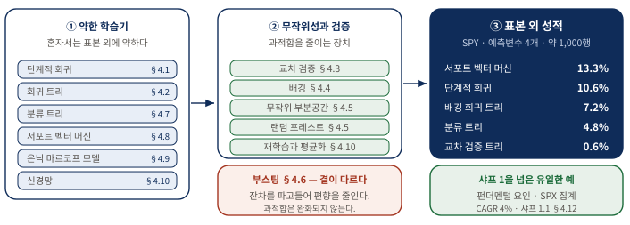
가운데 칸을 어떻게 채우느냐가 오른쪽 칸의 숫자를 만든다. 왼쪽 칸의 학습기만 바꾸는 것으로는 표본 외 성적이 크게 달라지지 않는다는 것이 이 장의 관찰이다. 표본 외 수치는 모두 SPY 예제(학습 2004-12-22~2009-09-15, 테스트 2009-09-16~2014-06-02)의 결과이며, 오른쪽 아래 항목만 SPX 구성 종목 펀더멘털 예제의 결과다. AIML Quant 재구성.| 단계 | 이 절이 답하는 질문 | 핵심 주장 | 실무 판단 |
|---|---|---|---|
| 도입 | 왜 AI 를 쓰는가, 그리고 왜 경계하는가? | 사람이 떠올리지 못한 규칙을 찾아 주지만, 왜 망가졌는지도 알기 어렵다 | 표본 외를 지키는 장치부터 설계한다 |
| 변수 선택 | 어떤 예측변수가 정말 중요한가? | 단계적 회귀가 ret2 하나만 남기고 표본 외를 0.4%에서 10.6%로 올린다 | 가장 단순한 기법에서 출발한다 |
| 계층적 분할 | 구역마다 다른 규칙을 세우면 어떤가? | 비선형을 담지만 잘게 쪼갤수록 과적합한다 | 잎 크기 하한을 두고 극단 잎만 쓴다 |
| 과적합 억제 | 모든 잎을 쓰면서도 과적합을 피할 수 있는가? | 교차 검증·배깅·랜덤 포레스트가 무작위성으로 분산을 낮춘다 | 데이터와 변수 양쪽을 흔든다 |
| 이산 반응 | 상승·하락이라는 범주로 바꾸면 어떤가? | 분류 트리 4.8%, 서포트 벡터 머신 13.3% | 진짜 선형 모델이 표본 외에 강하다 |
| 은닉 상태 | 정답 라벨이 없는 국면은 어떻게 다루는가? | 은닉 마르코프 모델이 전이·방출 확률로 국면을 정의한다 | 추정할 매개변수가 늘면 스누핑 여지도 는다 |
| 데이터 확대 | 행과 열을 어떻게 늘리는가? | 변동성으로 정규화해야 500여 종목을 한 모델로 학습할 수 있다 | 정규화 한 단계가 성패를 갈랐다 |
본문은 교재의 절 순서를 그대로 따른다. 재현 감사와 도입 판단은 원본 범위를 넘는 내용이므로 보충 A 와 보충 B 로 분리했다. 원문·해설·실행 코드는 참가자용 교재에서 확인한다: Chapter 4 해설판.
들어가며 — 이론물리학자에서 실험물리학자로
- 이 책의 다른 전략은 가설을 세우고 검증하는 이론물리학자 의 방식이지만, 머신러닝은 선입견 없이 되도록 많이 훑는 실험물리학자 의 태도에 가깝다.
- 금융 데이터는 양이 제한적이고 정상성(stationarity) 이 부족해, 과거에만 맞고 미래에 실패하는 규칙을 찾기가 너무 쉽다.
- 사람이 만든 모델은 왜 안 통하는지 이따금 이해할 수 있지만, 머신러닝이 학습한 규칙에는 그 행운이 없다 — 이것이 저자의 첫 번째 경계심이다.
정량 거래자는 보통 시장에 있을 법한 비효율에 대한 직감을 품고, 그 비효율을 파고들 전략을 궁리한 뒤, 데이터로 확인한다. 가설 → 실험 설계 → 검증이라는 순서다. 그런데 인공지능(AI, artificial intelligence) 기법은 순서가 다르다. 무엇이 가장 중요한 요인인지 미리 정하지 않은 채 효율적인 알고리즘의 힘을 빌려 가능한 한 많은 요인과 거래 규칙을 탐색한다.
금융 실무자들이 이런 방법론을 데이터 마이닝(data mining) 이라 부르며 경멸조로 취급하는 데에는 근거가 있다. 틱 데이터를 쓰지 않는 한 금융 데이터는 양이 상당히 제한적이고, 통계적 의미에서 정상성이 부족하다 — 수익률의 확률분포가 영원히 일정하게 유지되지 않는다는 뜻이다. 이런 데이터에 알고리즘을 그냥 풀어놓으면 과거 어느 구간에서는 기막히게 잘 맞았지만 앞으로는 처참하게 실패하는 규칙이 손쉽게 나온다.
물론 사람이 손수 빚은 거래 모델도 미래에 무너질 수 있다. 차이는 사후 진단 가능성에 있다. 사람이 만든 모델은 "왜 이제 안 통하는가"를 이따금 이해하고 손을 쓸 수 있지만, 학습된 규칙은 왜 망가졌는지조차 알기 어렵다. 이 대목이 장 전체를 관통하는 긴장을 미리 요약한다. 그래서 이어지는 실전 기법 대부분은 화려한 알고리즘 자체보다 표본 외 성능을 지키는 장치 — 학습셋과 테스트셋 분리, 교차 검증, 배깅 — 를 어디에 끼워 넣느냐에 초점을 맞춘다.
그럼에도 AI를 버리지 않는 이유
신중한 태도를 견지하면서도 저자는 이 분야가 무섭게 빠르게 발전하고 있음을 잊지 말라고 당부한다. 실무자들은 과적합 편향(overfitting bias), 곧 과거에만 잘 맞고 미래엔 어긋나는 성향을 피하도록 특별히 설계된 기법을 계속 내놓고 있다. 신경망만 해도 불과 몇 년 전까지는 비실용적이라며 외면받았지만, 2006년의 한 돌파구(Allen, 2015)가 이 분야에 다시 불을 지폈다.
트레이딩에 더 와닿는 일화도 있다. 저자가 전하기로, 퀀트 펀드 Renaissance Technologies 의 한 고위 관리자는 자신들의 가장 수익성 높은 전략 중 하나가 합리적인 금융적 정당성이 전혀 없는 전략이었다고 언론에 밝힌 적이 있다. 바로 그 "설명 불가능함" 덕분에 그 전략은 다른 트레이더들에게 차익거래로 갉아먹히지 않고 오래 살아남을 수 있었다. AI 기법이 건네줄 수 있는 규칙이 이런 종류라는 것이다.
또 하나의 쓸모는 더 실무적이다. 누군가 기본적 지표든 기술적 지표든 한 뭉치를 건넸는데 그것을 어떻게 써야 할지 감도 직관도 없을 때, 그냥 AI 에게 던져 주는 것이 가장 손쉬운 길이고 그 결과가 도리어 그 지표들에 대한 사람의 이해를 넓혀 줄 수도 있다.
이 장에서 쓰는 도구와 모델의 지형도
이 장이 다루는 기법들은 상당히 기본적이고 널리 알려진 것들이라 이미 상용 패키지 안에 잘 포장되어 있다. 바퀴를 다시 발명하거나 전업 AI 연구자가 될 생각이 없는 트레이더도 손쉽게 꺼내 쓸 수 있다는 뜻이다. 저자가 시연에 쓰는 도구는 MATLAB 의 Statistics and Machine Learning Toolbox 와 Neural Network Toolbox 이고, 한 대목에서는 Kevin Murphy 가 만든 Bayes Net Toolbox 를 쓴다. R 프로그래머라도 비슷한 패키지를 어렵지 않게 찾을 수 있다(Hothorn, 2014).
서로 무관해 보이는 모델들이지만 세 가지 기준으로 정리하면 지형이 드러난다. 주의할 것은 이 세 축이 서로 독립이라는 점이다. 같은 모델이 축마다 다른 쪽에 놓이므로, 한 축의 분류로 다른 축을 넘겨짚어서는 안 된다.
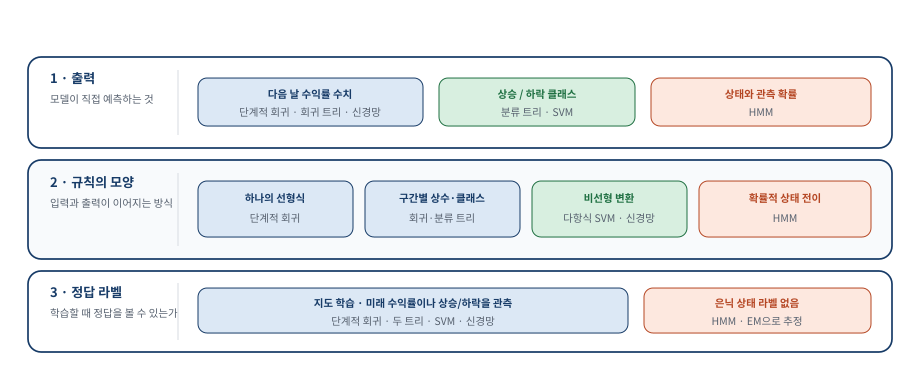
축마다 같은 모델이 다른 쪽에 놓이는지 확인하며 읽는다. 예컨대 서포트 벡터 머신은 선형이면서 동시에 이산 반응을 다루는 지도 학습이다. HMM 은 연속·이산 반응을 모두 다룰 수 있으나 이 장의 예제는 이산이며, 세 축 가운데 비지도 학습 쪽에 홀로 놓이는 유일한 모델이다. AIML Quant 재구성.| 기준 | 한쪽 | 다른 쪽 | 실무에서 갈리는 지점 |
|---|---|---|---|
| 선형 대 비선형 | 단계적 회귀 · 회귀 트리 · 분류 트리 · SVM · HMM (적어도 구간별 선형) | 신경망 (명시적 비선형) | 표현력이 커질수록 잡음까지 외울 여지도 커진다 |
| 연속 대 이산 | 단계적 회귀 · 회귀 트리 · 신경망 (연속 반응 변수(response variable)) | 분류 트리 · SVM (이산 반응) | 기대수익률의 크기를 쓸 것인가, 부호만 쓸 것인가 |
| 지도 대 비지도 | HMM 을 뺀 전부 — 관측 가능한 클래스로 지도 학습(supervised training) | HMM — 관측되지 않는 클래스로 비지도 학습(unsupervised training) | 정답 라벨을 눈으로 확인할 수 있는가 |
이 모든 모델은 몇 가지 공통 기법으로 개선할 수 있다. 다섯 가지 가운데 앞의 넷은 학습셋 과적합을 줄이는 것이 목표이고, 다섯 번째인 부스팅만 결이 다르다.
| 기법 | 무엇을 흔드는가 | 여러 모델을 어떻게 쓰는가 | 목표 |
|---|---|---|---|
| 교차 검증(cross validation) | 학습셋을 K개 부분집합으로 분할 | 표본 외 성능이 가장 좋은 하나만 고른다 | 과적합 감소 |
| 배깅(bagging) | 원 학습셋을 복원추출로 재표본추출 | 각 모델의 예측을 평균한다 | 과적합 감소 |
| 무작위 부분공간(random subspace) | 데이터가 아니라 예측 변수(predictor) 를 표본추출 | 각 모델의 예측을 평균한다 | 과적합 감소 |
| 랜덤 포레스트(random forest) | 데이터와 예측변수를 함께 | 각 모델의 예측을 평균한다 | 과적합 감소 · 트리 전용 |
| 부스팅(boosting) | 흔들지 않는다 — 앞 모델의 예측 오류에 집중 | 순차적으로 이어 붙인다 | 예측력 강화 (결이 다르다) |
하나의 예제로 모든 기법을 겨루게 하다
저자는 이 모델들과 기법들을 설명하기 위해 주로 단 하나의 단순한 예제에 집중한다. ETF SPY 의 다음 날 수익률을 다양한 룩백(1일·2일·5일·20일)의 과거 수익률로 예측하는 문제다. 매번 새 데이터셋을 이해하느라 힘 빼지 않고도 서로 다른 모델과 기법의 효과와 미묘한 차이를 나란히 견줄 수 있기 때문이다.
다만 SPY 가 AI 기법에 가장 유리한 상품이라는 뜻은 아니라고 저자는 분명히 한다. 실제로 이 기법들 대부분은 예측 변수가 많을수록 더 잘 작동하는데, 서로 상관이 낮은 기술적 변수보다 기본적 변수를 더 쉽게 많이 구할 수 있다. 그래서 장 끝에는 수익률 예측에 유용한 기본적 주식 요인(fundamental factor) 을 골라내는 예제 하나가 덧붙는다.
이 책은 금융 이론서도 머신러닝 이론서도 아니라 실전 트레이딩 책이므로 알고리즘의 복잡한 세부에는 오래 머물지 않는다. AI 기반 전략이 블랙박스(black-box) 라는 평판을 얻은 데는 이유가 있다. 모든 학습 알고리즘의 수학적 정당성을 완벽히 이해한들, 그 알고리즘이 어떤 특정 순간에 왜 그 신호를 냈는지를 직관적으로 이해하는 데는 한 발짝도 더 가까워지지 않기 때문이다(주석 1).
단계적 회귀 (Stepwise Regression) — 알고리즘이 스스로 변수를 고르게 하다
- AI 의 핵심 효용 하나는 반응변수를 예측하는 데 가장 중요한 예측변수를 알고리즘이 스스로 골라내는 특성 선택(feature selection) 이다.
- 특성 선택과 선형 회귀(linear regression) 를 결혼시킨 결과물이 단계적 회귀다 — 모델이 꼭 복잡할 필요는 없다.
- 변수를 하나로 줄인 단순한 모델이 표본 내에서도 표본 외에서도 전체 회귀를 이겼다. 표본 내에서 이긴 것은 이례적이고, 표본 외에서 이긴 것이 더 중요하다.
SPY 의 미래 1일 수익률을 예측한다고 하자. 후보 예측변수로 직전 1일 수익률, 스토캐스틱 오실레이터, P/E 비율 같은 것을 떠올릴 수 있다. 어느 것이 중요한지 대개 모르니 부엌 싱크대만 빼고 다 던져 넣는 심정으로 알고리즘에 몽땅 넣고 최선을 기대한다. 이때 알고리즘이 그중 쓸 만한 것을 골라내는 일이 특성 선택이다.
먼저 평범한 다중 회귀부터 — 벤치마크 만들기
기술적·기본적 예측변수를 섞는 대신 다양한 룩백(1일·2일·5일·20일)의 과거 수익률만 예측변수로 쓴다. 평범한 다중 회귀(multiple regression) 는 미래 1일 수익률을 이 모든 예측변수에 동시에 적합시켜 모든 회귀계수와 y절편을 한꺼번에 구한다.
Python · 계수만 필요하면 두 줄, 교재의 p-값 표까지 맞추려면 다섯 줄
솔직하게 적어 둘 부분이다. 계수만 필요하면 np.linalg.lstsq 한 줄로 끝나지만, 교재가 보여 주는 계수와 p-값 표 를 그대로 재현하려면 표준오차·t통계량·p값을 손으로 계산해야 한다. 이 장에서 MATLAB 쪽이 분명히 간결한 몇 안 되는 자리다.
design = np.column_stack([np.ones(len(x)), x])
coefficients, *_ = np.linalg.lstsq(design, y, rcond=None) # = fitlm
# 교재가 보여 주는 p-값 표까지 맞추려면 아래가 더 필요하다
covariance = variance * np.linalg.inv(design.T @ design)
t_statistics = coefficients / np.sqrt(np.diag(covariance))
p_values = 2.0 * stats.t.sf(np.abs(t_statistics), degrees_of_freedom)numpy 와 scipy 만으로 계산했다. statsmodels 의 OLS 를 쓰면 요약표까지 한 번에 나오지만, 그러면 어떤 값이 어떻게 계산되는지가 라이브러리 안으로 숨는다. 이 함수가 뱉는 수치는 표 14 에서 인쇄된 값과 소수점 여섯 자리까지 일치했다.
원본 대응 · 교재 MATLAB — 전체 예측변수를 한꺼번에 적합하는 다중 회귀
model_train = fitlm([ret1(trainset) ret2(trainset) ret5(trainset) ...
ret20(trainset)], retFut1(trainset), 'linear')ret1, ret2, …, ret20 은 각 룩백의 과거 수익률을 담은 T × 1 배열이고 retFut1 은 미래 1일 수익률을 담은 T × 1 배열이다. fitlm 은 기본적으로 상수항이 있다고 가정하므로 1로 채운 열을 따로 넣을 필요가 없다. 매개변수 'linear' 는 독립변수들의 곱을 예측변수로 쓰지 않겠다는 뜻이다.
이 회귀 모델을 적합하는 데 전체 데이터를 다 써서는 안 된다. 데이터의 후반부는 테스트셋(test set) 으로 남겨 둔다. 여기서 trainset 은 데이터 전반부의 인덱스를 담은 배열이다. 학습셋(training set) 과 테스트셋을 나누는 것은 어떤 거래 모델을 만들 때든 늘 지키는 절차이지만, 머신러닝 모델은 과적합 성향이 유독 강하기 때문에 특히 중요하다.
Python · 하루 지연을 포지션 정의 안에 못박는다
아래 MATLAB 은 예측이 난 그 날 곧바로 포지션을 잡은 것처럼 보인다. 하루 뒤에 체결된다는 사실은 뒤에서 backshift(1, positions) 로 따로 처리되는데, 그 한 줄을 빠뜨리면 미래를 미리 아는 백테스트가 된다. 아래 재현은 그 지연을 포지션을 만드는 자리에 붙여 두어 빠뜨릴 수 없게 했고, 거래비용도 같은 자리에서 뺀다.
positions = np.r_[0.0, np.sign(prediction)[:-1]] # 오늘 → 내일
gross_returns = positions * returns
turnover = np.abs(np.diff(np.r_[0.0, positions]))
net_returns = gross_returns - turnover * 2 / 10_000 # 편도 2bpsbacktest_signals() 에서 핵심 네 줄만 뽑았고 성과지표 계산은 생략했다. 이 장의 모든 Python 적응 실험이 같은 함수를 통과하므로 그림 22 의 총수익과 비용 후 수익이 모델 간에 같은 기준으로 비교된다.
원본 대응 · 교재 MATLAB — 예측과 단순 거래 규칙
retPred1 = predict(model, [ret1(trainset) ret2(trainset) ...
ret5(trainset) ret20(trainset)]);
positions(retPred1 > 0) = 1;
positions(retPred1 < 0) = -1;retPred1 은 실제 미래 1일 수익률 대신 예측된 미래 1일 수익률을 담는다. 예측이 양수면 SPY 를 1달러어치 매수하고 음수면 1달러어치 공매도한 뒤 딱 하루만 보유한다.
이렇게 하면 연평균 성장률(CAGR, compound annual growth rate) 34.3퍼센트, 샤프 비율(Sharpe ratio) 1.4 가 나온다. 2004년 12월 22일부터 2009년 9월 15일까지의 학습 데이터에 꽤 잘 맞는다는 뜻이다. 그런데 2009년 9월 16일부터 2014년 6월 2일까지의 테스트 데이터에 같은 절차를 반복하면 CAGR 은 0.4퍼센트, 샤프 비율은 0.1 로 곤두박질친다. 테스트셋에서 이 모델(주석 2, 전체 코드 lr.m)은 무작위와 다를 바 없다. 바로 이 초라한 성적이 단계적 회귀가 넘어서야 할 손쉬운 벤치마크가 된다.
단계적 회귀는 무엇이 다른가
단계적 회귀는 처음부터 모든 변수를 쓰지 않고 단 하나의 "최선" 예측변수에서 출발한다. 최선을 고르는 기준으로는 제곱오차합(MATLAB stepwiselm 의 기본값), 아카이케 정보 기준(AIC), 베이지안 정보 기준(BIC) 같은 적합도 척도를 쓴다. 그다음 적합도가 더 좋아지는 한 예측변수를 한 번에 하나씩 추가 한다. 개선이 멈추면 방향을 뒤집어 예측변수를 한 번에 하나씩 제거 하며 역시 개선이 멈출 때까지 진행한다. 넣었다 뺐다 하며 정말 필요한 변수만 추리는 셈이다.
여기서 AIC 와 BIC 가 왜 중요한지 짚고 갈 필요가 있다. 단순히 오차를 줄이는 것만 목표로 삼으면 변수를 많이 넣을수록 표본 내 오차는 무조건 줄어든다. 문제는 그렇게 늘어난 변수 상당수가 그저 학습셋의 잡음을 외운 것에 불과하다는 점이다. AIC 와 BIC 는 오차를 줄이는 보상과 변수를 늘리는 벌점을 저울질하여, 변수 하나를 더 넣어 얻는 이득이 그 복잡함의 대가를 넘어설 때만 그 변수를 받아들이게 만든다. 단계적 회귀가 변수를 무작정 늘리지 않고 절제하는 힘이 여기서 나온다.
Python · stepwiselm 이 감춘 절차를 펼쳐 쓴다
MATLAB 은 함수 이름 하나로 끝나지만 그 안에서 무슨 일이 일어나는지는 보이지 않는다. 이 장의 결론이 "단 하나의 변수가 반전을 만들었다"인 만큼, 재현에서는 그 선택 과정을 펼쳐 썼다.
# 네 후보를 각각 단변량으로 적합해 p값이 가장 작은 하나를 고른다
for feature_index, feature_name in enumerate(FEATURE_NAMES):
_, p_values = ols_fit(x[:, [feature_index]], y)
candidate_p_values[feature_name] = float(p_values[-1])
selected = min(candidate_p_values, key=candidate_p_values.get)ols_fit 을 그대로 재사용한다. 원본은 선택된 변수가 5퍼센트 문턱을 넘지 못하면 AssertionError 를 던지는데, 구조가 드러나도록 그 검사와 재적합 줄을 생략했다. 이 구현은 전진 선택 한 단계만 수행하며 stepwiselm 의 후진 제거는 포함하지 않는다 — 이 예제에서 실제로 채택되는 변수가 하나뿐이기 때문이다.
원본 대응 · 교재 MATLAB — 함수 이름 하나만 바꾸면 된다
model = stepwiselm([ret1(trainset) ret2(trainset) ret5(trainset) ...
ret20(trainset)], retFut1(trainset), 'Upper', 'linear')'Upper' 와 그 값 'linear' 는 예측변수로 독립변수들의 곱이 아니라 그 선형 함수만 쓰겠다는 뜻이다.
단 하나의 변수가 만든 반전
알고리즘은 단 하나의 예측변수, ret2(직전 2일 수익률)만 골랐다(주석 3, 전체 코드 stepwiseLR.m). 그런데 이 하나가 표본 내 CAGR 을 34.3퍼센트에서 43.5퍼센트로, 샤프 비율을 1.4 에서 1.6 으로 끌어올린다. 저자가 지적하듯 이것은 자못 이례적이다. 보통은 변수가 더 적은 단순한 모델이 표본 내에서 복잡한 모델보다 못한 성적을 내기 마련이기 때문이다. 그러나 더 중요한 것은 표본 외 성적이다. 단계적 회귀는 표본 외 CAGR 을 0.4퍼센트에서 10.6퍼센트로, 샤프 비율을 0.1 에서 0.7 로 올려, 모델이 통계적 유의성 — 그 기준은 샤프 비율 1 이다 — 에 바짝 다가섰음을 보여 준다.
| 모델 | 쓴 예측변수 | 표본 내 CAGR · 샤프 | 표본 외 CAGR · 샤프 |
|---|---|---|---|
다중 회귀 np.linalg.lstsq (교재 fitlm) | ret1 · ret2 · ret5 · ret20 (4개) | 34.3% · 1.4 | 0.4% · 0.1 |
단계적 회귀 select_stepwise_predictor (교재 stepwiselm) | ret2 (1개) | 43.5% · 1.6 | 10.6% · 0.7 |
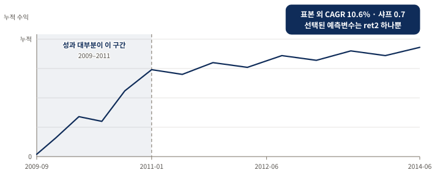
먼저 볼 것은 상승의 시점 분포 다. 성과 대부분이 2009~2011년의 이른 구간에서 나왔고 이후는 정체한다. 이것이 알고리즘의 잘못은 아니며, 매 단계마다 최신 데이터를 학습셋에 더해 재학습하면 개선할 수 있다(연습문제 4.1). 곡선은 교재가 서술한 시점 분포와 보고된 표본 외 지표를 담은 AIML Quant 모식도이며, 원자료를 다시 그린 것이 아니다.마지막으로 한 가지 세부를 놓치지 말아야 한다. ret2 의 회귀계수는 음수 다. 이는 이 모델이 미래 1일 수익률이 과거 2일 수익률로부터 되돌림(reversion), 즉 평균회귀를 보일 것으로 예측한다는 뜻이다. 모델이 AI 로 만들어졌다고 해서 그것으로 시장에 대한 우리 자신의 이해를 넓히지 못할 이유는 없다는 것이 저자의 논평이다.
모델은 수익률의 크기까지 예측하지만 여기서는 부호만 신호로 썼다. 크기를 활용하는 방법으로 저자는 두 가지를 제안한다 — 크기가 어떤 임계값을 넘을 때만 사고파는 것(연습문제 4.2), 예측 크기에 비례하는 금액만큼 사고파는 것(연습문제 4.3)이다.
회귀 트리 (Regression Tree) — 데이터를 스무고개처럼 쪼개다
- 단계적 회귀는 고른 변수를 모든 데이터에 똑같이 적용하지만, 회귀 트리는 데이터를 나눈 뒤 구역마다 다른 규칙 을 세운다.
- 이 유연함이 국면마다 다른 비선형 현상을 담아내지만, 잘게 쪼갤수록 각 잎의 관측치가 줄어 과적합에 빠지기 쉽다.
- 양 극단 잎 두 개만 쓰면 표본 외 3.9%·샤프 0.5, 모든 잎을 쓰면 표본 내 73%·표본 외 −7.2% — 과적합의 전형적 증상이다.
회귀 트리(regression tree) 와 그 형제 격인 분류 트리(classification tree) 도 중요한 예측변수를 골라내는 방법이지만 단계적 회귀와는 결정적으로 다르다. 회귀 트리는 계층적(hierarchical) 으로 접근하며, 사실 이 알고리즘은 선형 회귀와 거의 관계가 없다.
작동 방식은 이렇다. 알고리즘이 어떤 기준으로 최선의 예측변수를 고르면, 그 변수에 부등식 조건(예: "직전 2일 수익률 < 1.5%")을 걸어 데이터를 두 덩어리로 나눈다. 원래 데이터가 부모 노드(parent node), 갈라진 두 덩어리가 각각 자식 노드(child node) 다. 그다음 중지 조건이 충족될 때까지 각 자식 노드에 똑같은 일을 반복한다. 스무고개에서 예/아니오 질문으로 후보를 좁혀 가는 것과 같다.
단계적 회귀와의 근본적 차이를 여기서 잡아 두면 좋다. 단계적 회귀에서는 "ret2 의 계수는 어디서나 −0.3" 하는 식으로 하나의 규칙이 전체를 지배한다. 반면 회귀 트리는 어떤 구역에서는 ret1 이 중요하고 다른 구역에서는 ret2 가 중요할 수 있다. 이 유연함 덕분에 시장이 국면마다 다르게 움직이는 비선형 현상을 담아낼 수 있지만, 동시에 데이터를 잘게 쪼갤수록 각 잎에 남는 관측치가 적어져 과적합에 빠지기도 쉽다.
각 노드에서 최선의 예측변수를 고르는 기준은 보통 자식 노드 안에서 반응변수의 분산(variance) 을 최소화하는 것이다(Breiman et al., 1984). 한 노드의 분산을 최소화한다는 말은 실제 반응과 비교한 예측 반응의 평균제곱오차(MSE, mean squared error) 를 최소화한다는 말과 같다. 한 노드의 예측 반응이란 다름 아닌 그 노드에 든 반응변수들의 평균이기 때문이다. 중지 조건은 다음 중 하나라도 벌어지면 충족된다.
- 부모 노드의 분산과 비교해 분산이 더 줄지 않거나,
- 부모 노드의 관측치 수가 너무 적거나(
MinParentSize가 입력 매개변수), - 어떤 예측변수로 나누어도 관측치가 너무 적은 자식 노드가 생기거나(
MinLeafSize가 또 다른 입력 매개변수), - 최대 노드 수에 도달한 경우다(
MaxNumSplits가 전체 분할 수를 제한한다).
이 알고리즘은 반복적이라 같은 예측변수가 여러 자식 노드에서 몇 번이고 다시 쓰일 수 있다. 트리의 각 잎(leaf) — 자식이 없는 자식 노드 — 은 예측변수들에 대한 부등식의 집합으로 요약된다. 따라서 우리가 원하는 평균 반응을 가진 잎들을 골라내면 된다. 테스트셋의 어떤 새 데이터가 "높은 미래 수익률 잎"으로 이어지는 부등식을 전부 만족한다면, 그 데이터도 높은 미래 수익률을 낼 것이라 예측한다.
SPY에 회귀 트리 적용하기
단계적 회귀 예제와 똑같은 데이터·예측변수·반응변수에 회귀 트리를 시도한다. 프로그램 rTree.m 은 사실상 stepwiseLR.m 과 같고, stepwiselm 을 fitrtree 로 바꾸기만 하면 된다. Python 에서도 마찬가지로 ols_fit 자리에 DecisionTreeRegressor 를 넣는 것이 전부다.
Python · fitrtree → DecisionTreeRegressor
'MinLeafSize' 가 min_samples_leaf 로 이름만 바뀌었을 뿐 역할은 같다. 다른 점은 두 가지다. scikit-learn 은 난수 시드를 인자로 받아 결과를 고정할 수 있고, 학습 배열을 만드는 valid_training_arrays 가 목표값이 테스트 구간을 넘보는 마지막 한 행을 빼고 split - 1 까지만 쓴다.
x_train, y_train, _ = valid_training_arrays(data) # 누수 1행 제외
tree = DecisionTreeRegressor(min_samples_leaf=100,
random_state=RANDOM_SEED)
tree_rmse, _ = chronological_cv_regression(tree, x_train, y_train)원본 대응 · 교재 MATLAB — 잎 크기 하한을 두고 트리를 기른다
model = fitrtree([ret1(trainset) ret2(trainset) ret5(trainset) ...
ret20(trainset)], retFut1(trainset), 'MinLeafSize', 100);
view(model, 'mode', 'graph'); % 트리를 시각적으로 보기MinLeafSize 를 100 으로 정했지만 다른 값을 실험해 학습셋에서 무엇이 최적인지 확인해도 된다. 다만 일반적으로 과적합을 피하려면 잎 크기가 너무 작아지는 것은 피해야 한다.
리프 노드 아래의 숫자들은 그 잎에 이르는 일련의 부등식 아래에서 반응변수의 기댓값(expected value) 을 나타낸다.
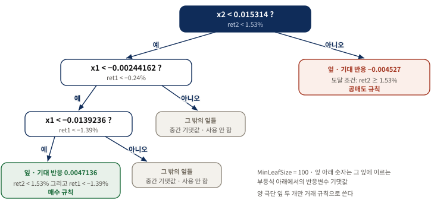
잎에 이르는 부등식을 위에서부터 이어 읽는 것이 이 그림을 읽는 법이다. 가장 높은 기댓값 0.0047136 의 잎은 $x2 < 0.015314$, $x1 < -0.00244162$, $x1 < -0.0139236$ 를 모두 만족하며, 이는 ret2 < 1.53% 그리고 ret1 < −1.39% 로 풀어 쓸 수 있다. 가장 낮은 기댓값 −0.004527 의 잎에 이르는 단일 부등식은 ret2 ≥ 1.53% 다. 교재의view 출력 트리에서 두 극단 잎에 이르는 경로와 인쇄된 임계값·기댓값을 보존하고, 사용하지 않는 중간 잎은 하나로 묶어 표시한 AIML Quant 재구성이다.
두 규칙 모두 단계적 회귀가 낳은 모델과 마찬가지로 평균회귀적(mean-reverting) 이다. 롱 규칙에 따라 종가에 SPY 를 사서 하루 보유하고 숏 규칙에 따라 공매도해 하루 보유하면, 학습셋에서는 CAGR 28.8퍼센트에 샤프 비율 1.5, 테스트셋에서는 CAGR 3.9퍼센트에 샤프 비율 0.5 가 나온다. 단계적 회귀만큼 좋지는 않다.
왜 극단의 잎 두 개만 쓰는가 — 과적합의 함정
두 극단의 잎에만 매달리지 말고 모든 잎의 기대 반응으로 거래 규칙을 만들면 안 되냐고 물을 수 있다. 실제로 해 보면 — 앞서 stepwiseLR.m 에서 쓴 predict 함수를 그대로 쓰면 된다 — 표본 내 CAGR 은 73퍼센트까지 치솟지만 표본 외 CAGR 은 −7.2퍼센트로 추락한다. 과적합의 전형적인 증상이다.
| 사용 방식 | 신호 생성 | 표본 내 CAGR · 샤프 | 표본 외 CAGR · 샤프 |
|---|---|---|---|
| 양 극단 잎 2개 | ret2 < 1.53% 그리고 ret1 < −1.39% 면 매수 / ret2 ≥ 1.53% 면 공매도. 조건 밖의 날은 포지션 없음 | 28.8% · 1.5 | 3.9% · 0.5 |
| 모든 잎 | predict 로 매일 기대 반응을 얻어 부호대로 매매 | 73% · — | −7.2% · — |
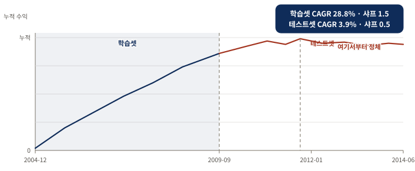
학습셋과 테스트셋을 한 축에 이어 그려 두 구간의 기울기 차이를 보는 그림이다. 평균회귀 모델들은 테스트셋의 전반부에만 통했다. 극단 잎 두 개만 쓰므로 조건에 맞지 않는 날은 포지션이 없다는 점도 곡선의 평탄한 구간을 만든다. 교재가 서술한 구간별 유효성과 보고된 두 구간의 지표를 담은 AIML Quant 모식도이며, 원자료를 다시 그린 것이 아니다.하지만 케이크를 먹으면서 동시에 남겨 두는 방법도 있다. 이어지는 세 절에서 실제로 모든 잎을 예측에 쓸 수 있게 해 주는 과적합 억제 기법들을 살펴본다.
교차 검증 (Cross Validation) — 모델을 만들면서 미리 표본 외로 검증하다
- 학습셋을 K개로 나눠 매번 한 조각을 빼고 학습한 뒤, 빼 두었던 조각에서 정확도를 잰다.
- 각 조각은 그 모델의 학습에 한 번도 쓰이지 않았으므로 이 점수는 진짜 표본 외 성적에 가깝다.
- 모든 잎을 쓰던 −7.2%를 표본 외 0.6%·샤프 0.11 로 되돌렸다 — 분명한 개선이지만 극단 잎 두 개만 쓴 3.9% 에는 못 미친다.
교차 검증(cross validation) 은 모델 구축 과정 자체에 표본 외 성능 검사를 끼워 넣어 과적합을 줄이는 기법이다. 학습셋을 대략 같은 크기의 K개 부분집합으로 무작위로 나눈 뒤, 모델 $i$ 는 $i$ 번째 부분집합만 빼고 나머지 전부의 합집합으로 만든다. 그런 다음 빼 두었던 $i$ 번째 부분집합에서 모델 $i$ 의 예측 정확도를 검사한다. 이것을 교차 검증 정확도(cross-validation accuracy) 라 하고, 마지막에 이 정확도가 가장 높은 모델을 고른다. 시험 범위를 조각조각 나눠 매번 한 조각을 안 보고 남겨 뒀다가 그 조각으로 실력을 재는 셈이다.
핵심은 각 조각을 채점할 때 그 조각이 해당 모델의 학습에 한 번도 쓰이지 않았다는 점이다. 그래서 이 점수는 학습셋에 얼마나 잘 외웠는지가 아니라 처음 보는 데이터에 얼마나 잘 일반화하는지를 잰다. 과적합된 모델은 학습셋에서 만점을 받아도 이 점수에서 밑천이 드러나므로, 이 점수로 모델을 고르면 자연스럽게 과적합이 덜한 쪽을 선택하게 된다.
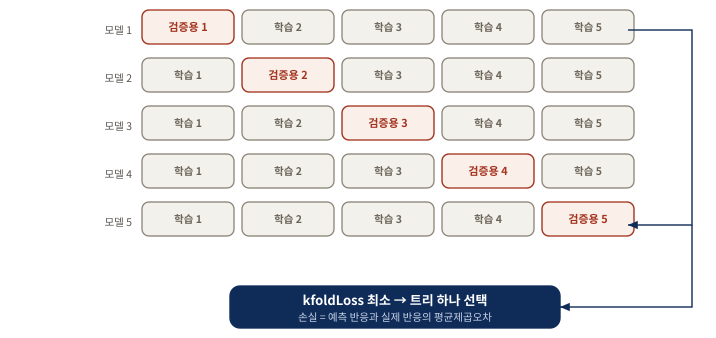
대각선을 따라 이동하는 붉은 조각이 이 그림의 읽는 법이다. 붉은 조각은 그 행의 모델 학습에 쓰이지 않았으므로 그 조각의 점수만이 표본 외 성적에 가깝다. 다섯 점수 가운데 손실이 가장 작은 트리 하나를 최종 모델로 삼는다. AIML Quant 재구성.Python · 무작위 K-겹을 TimeSeriesSplit 으로 바꾼다
여기서 교재와 갈라진다. MATLAB 의 'CrossVal','On' 은 학습셋을 무작위로 다섯 조각 낸다 — 아래 본문이 "다른 난수 시드로 돌리면 다른 CAGR 이 나온다"고 적은 이유다. 시계열에서 무작위 분할은 미래 구간으로 학습해 과거를 맞히는 폴드를 만든다. 아래 재현은 언제나 과거로 학습하고 그 뒤 구간만 검증한다.
for train, validation in TimeSeriesSplit(n_splits=5).split(x):
fitted = clone(estimator).fit(x[train], y[train]) # 과거로 학습
prediction = fitted.predict(x[validation]) # 그 뒤만 검증
errors.append(np.sqrt(mean_squared_error(y[validation], prediction)))chronological_cv_regression() 은 각 폴드의 경계 인덱스도 함께 돌려주지만 분할 방식이 드러나도록 생략했다. 이 교체가 이 장 전체에서 가장 중요한 방법론 차이이며, 아래 모든 Python 적응 실험이 이 함수를 쓴다.
원본 대응 · 교재 MATLAB — 이름/값 쌍 두 개로 K개의 트리를 만든다
model_cv = fitrtree([ret1(trainset) ret2(trainset) ret5(trainset) ...
ret20(trainset)], retFut1(trainset), 'MinLeafSize', 100, ...
'CrossVal', 'On', 'KFold', 5);
L = kfoldLoss(model_cv, 'mode', 'individual'); % 폴드 밖 데이터에 대한 평균제곱오차
[~, minLidx] = min(L); % 과적합 오차가 가장 작은 트리
bestTree = model_cv.Trained{minLidx};fitrtree 로 모델을 만들 때 'CrossVal', 'On' 과 'KFold', 5 만 더하면 model_cv 에 K = 5 개의 트리가 담긴다.
각 트리의 교차 검증 정확도, 또는 그 반대 척도인 손실(loss) — 예측 반응과 실제 반응 사이의 평균제곱오차 — 을 구하려면 kfoldLoss 를 적용해 손실이 가장 작은 트리를 고른다. bestTree 를 모델 삼아 테스트셋에서 predict 를 실행하면 CAGR 0.6퍼센트, 샤프 비율 0.11 이 나온다. 교차 검증을 쓰지 않았던 −7.2퍼센트보다는 분명히 낫지만, 극단의 잎 두 개만 골랐을 때만큼은 아니다. 이 프로그램을 다른 난수 시드로 돌리면 다른 트리와 다른 CAGR 이 나오는데, 교차 검증이 각 트리에 쓸 학습 데이터 부분집합을 무작위로 고르기 때문이다.
왜 K = 10이 아니라 K = 5인가
MATLAB 기본값은 10 이다. 저자가 5 를 고른 이유는 데이터 크기에 있다. 2004년 12월 22일부터 2009년 9월 15일까지의 학습셋은 트레이딩 연구로는 그럭저럭 쓸 만한 크기이지만 머신러닝 기준으로는 상당히 작다. 이 학습셋을 10개로 쪼개면 남겨 두는 표본 외 조각이 너무 작아져 교차 검증 정확도가 큰 통계적 오차에 휘둘린다. 그러면 뽑힌 "최선"의 트리가 테스트셋에서 딱히 좋으리란 보장이 없다. 반대로 K 를 2 처럼 너무 작게 잡으면 그중에서 최선을 고를 만큼 학습된 모델이 충분치 않게 된다. 5 는 이 둘 사이의 타협점이다.
K 선택은 두 오차의 저울질이다. K 가 크면 검증 조각이 작아 점수의 분산 이 커지고, K 가 작으면 비교할 모델 수가 적어 선택의 여지 가 줄어든다. 데이터가 작을수록 저울은 작은 K 쪽으로 기운다.
배깅 (Bagging) — 데이터를 복제해 여러 모델을 평균 내다
- 학습셋을 나누는 대신 복원추출(sampling with replacement) 로 크기 N 의 복제본을 K개 만든다.
- 교차 검증과 결정적으로 다른 점은 최선 하나를 고르지 않고 모든 트리의 예측을 평균 한다는 것이다.
- 표본 외 CAGR 7.2%·샤프 0.5 — 교차 검증본보다 훨씬 낫다. 그런데 K 를 키우면 오히려 나빠진다.
교차 검증에서 우리는 하나의 학습셋에만 있는 통계적 요동 — 테스트셋에서는 되풀이되지 않을 우연한 잡음 — 에 알고리즘이 과적합하지 않도록 조금씩 다른 학습셋을 제시하는 것이 유익하다는 아이디어를 얻었다. 배깅(bagging) 은 이 주제의 또 다른 변주다.
크기 N 의 원래 학습셋을 부분집합으로 나누는 대신, 배깅은 원래 학습셋에서 N개의 관측치를 복원추출로 뽑아 복제본 하나(백(bag))를 만든다. 복원추출이므로 어떤 관측치는 복제본에 여러 번 들어가고 어떤 관측치는 아예 빠진다. 빠진 것들을 배깅 외 관측치(out-of-bag observations) 라 부른다. 이 과정을 K번 반복해 각각 원래 크기 N 을 갖는 복제본 K개의 앙상블(ensemble) 을 만든다. 사실상 학습 표본을 불려 주므로 부트스트래핑(bootstrapping) 이라고도 부른다.
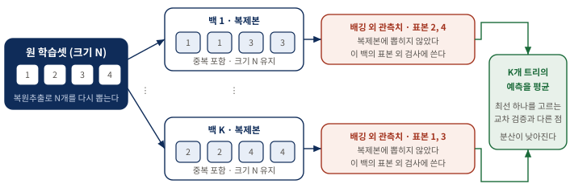
한 복제본에 들어간 표본과 빠진 표본을 짝지어 읽는 그림이다. 각 백에서 빠진 관측치가 곧 그 백의 표본 외 검사 자료가 되므로, 별도의 검증셋을 떼지 않고도 표본 외 정확도를 잴 수 있다. AIML Quant 재구성.교차 검증과 마찬가지로 각 복제본에서 모델을 학습하고 그에 대응하는 배깅 외 관측치에서 예측 정확도를 검사한다. 그러나 결정적으로 다른 점이 있다. 배깅 외 예측이 가장 정확한 트리 하나만 고르는 것이 아니라, 모든 복제본에서 만든 모든 트리의 예측 반응을 평균 한다. 여러 사람에게 같은 문제를 조금씩 다른 자료로 풀게 한 뒤 그 답들을 평균 내어 개인의 편향을 상쇄하는 것과 같다.
Python · TreeBagger → RandomForestRegressor
백의 개수 5 는 n_estimators, 'MinLeaf' 는 min_samples_leaf 로 옮겨진다. 여기에 한 줄이 더 붙는데 max_features="sqrt" 다. 이것이 다음 절에서 다룰 무작위 부분공간 이며, scikit-learn 에서는 배깅과 랜덤 포레스트가 같은 클래스의 인자 하나로 이어진다.
forest = RandomForestRegressor(n_estimators=5, # 백 K개
min_samples_leaf=100,
max_features="sqrt", # 무작위 부분공간
random_state=RANDOM_SEED)random_state 와 함께 n_jobs=1 도 고정해야 한다. 병렬 실행 순서가 결과를 흔들기 때문인데, 발췌에서는 생략했다.
원본 대응 · 교재 MATLAB — fitrtree 대신 TreeBagger
model = TreeBagger(5, [ret1(trainset) ret2(trainset) ret5(trainset) ...
ret20(trainset)], retFut1(trainset), 'Method', 'regression', ...
'MinLeaf', 100);rTreeBagger.m).
이것은 교차 검증 모델보다 훨씬 나은 예측 성능을 냈다 — CAGR 7.2퍼센트, 샤프 비율 0.5 다.
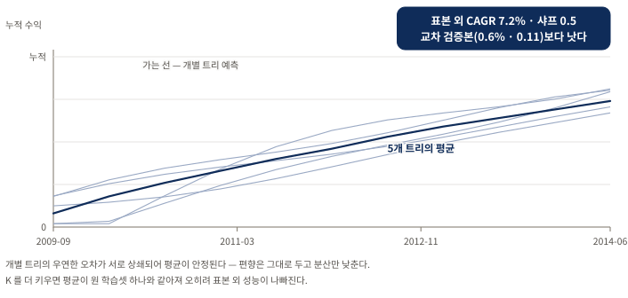
가는 선들의 흩어짐과 굵은 평균선의 매끄러움을 대조해 읽는 그림이다. 개별 트리의 우연한 오차가 서로 상쇄되어 평균이 안정된다. 배깅은 편향은 그대로 두고 분산만 낮추므로 과적합에 시달리는 트리 같은 모델에 특히 잘 듣는다. 개별 트리 곡선은 분산 상쇄를 보이기 위한 AIML Quant 모식도이고, 표시된 지표만 교재가 보고한 값이다.여기서 재미있는 반직관이 있다. K 를 키우면 오히려 표본 외 성능이 나빠진다. 복제본을 아주 많이 만들어 평균 내면 그 평균 결과가 결국 원래 학습셋 하나를 쓴 것과 거의 같아지기 때문이다. 무작위성으로 얻는 이득이 사라지는 것이다.
트리 하나는 학습 데이터의 우연한 요동에 민감해 예측이 들쭉날쭉하다(높은 분산). 조금씩 다른 데이터로 기른 트리 여러 개의 예측을 평균하면 각 트리의 우연한 오차가 서로 상쇄되어 예측이 안정된다. 손 떨리는 사격수 여럿의 탄착점을 평균하면 과녁 중앙에 가까워지는 것과 같은 이치다.
무작위 부분공간과 랜덤 포레스트 — 데이터가 아니라 변수를 뽑다
- 배깅이 데이터 를 표본추출한다면, 무작위 부분공간은 예측변수 를 표본추출한다.
- 랜덤 포레스트는 둘을 버무린 잡종으로, 특히 회귀·분류 트리를 위해 설계되었다.
- 모든 노드에서 모든 예측변수를 쓰게 하면 표본 외 CAGR 이 7.2%에서 1.5%로, 샤프가 0.5에서 0.2로 떨어진다 — 변수까지 흔드는 것이 성능에 도움이 된다.
무작위 부분공간(random subspace) 에서는 여러 모델을 학습시키려고 예측변수를 복원추출로 무작위 표본추출한다. 단 앞서 뽑힌 변수는 다음에 뽑힐 확률을 낮춘다. 두 경우 모두 이 모델들, 곧 약한 학습기(weak learner) 들의 예측을 평균해 앙상블 예측을 더 강하게 만든다. 많은 약한 학습기를 학습시켜 하나의 강한 학습기를 만드는 모든 방법을 통틀어 앙상블 방법이라 한다.
MATLAB 에서 무작위 부분공간을 구현하는 함수는 fitensemble 이며 'Method' 를 'Subspace' 로 설정하면 된다. 그러나 이 함수는 분류 문제, 즉 연속형이 아니라 이산형 반응변수에서만 작동한다. 또한 무작위 부분공간은 예측변수가 아주 많을 때에만 진가를 발휘하므로, 반응변수를 이산화하더라도 겨우 예측변수 4개짜리 SPY 예제로는 여기서 시연할 수 없다. 저자는 대신 "주식 선택에의 적용" 절의 기본적 데이터셋으로 시도해 보길 권한다(연습문제 4.4). scikit-learn 에는 이 제약이 없다. RandomForestRegressor 의 max_features 인자가 회귀에서도 같은 일을 하므로, 앞 절의 배깅 코드에 인자 하나를 더한 것이 곧 무작위 부분공간이다.
배깅과 무작위 부분공간을 한데 버무린 또 다른 앙상블이 랜덤 포레스트(random forest) 다. 더 구체적으로, 랜덤 포레스트는 무작위로 뽑은 학습 데이터 부분집합에서 출발하고, 노드를 나눌 때마다 사용 가능한 전체 예측변수 중 무작위로 뽑은 부분집합에서 최선의 변수를 고르는 회귀 또는 분류 트리다. MATLAB 에서는 TreeBagger 에 'NumPredictorsToSample' 을 전체 예측변수 수보다 작은 값으로 설정해 구현한다. 기본값은 전체 예측변수의 3분의 1 이며, 이것이 앞 절 배깅 예제와 rTreeBagger.m 에서 쓴 값이다.
모든 노드에서 모든 예측변수를 다 쓰고 싶다면 'NumPredictorsToSample' 을 'all' 로 설정하면 된다. 그렇게 하면 앞 예제의 표본 외 CAGR 이 7.2퍼센트에서 1.5퍼센트로, 샤프 비율이 0.5 에서 0.2 로 떨어진다.
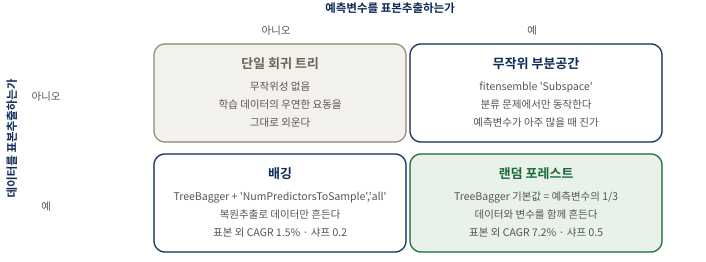
같은TreeBagger 호출이 'NumPredictorsToSample' 값 하나로 아래 두 칸을 오간다는 점이 이 그림의 핵심이다. 격자의 두 축은 서로 독립이므로 네 칸이 모두 실재하는 선택지다. 표시된 두 지표는 교재가 SPY 예제에서 보고한 값이다. AIML Quant 재구성.
이 결과가 처음엔 뜻밖으로 들릴 수 있다. 매번 최선의 변수를 자유롭게 고르게 두는 편이 더 나아 보이기 때문이다. 그러나 모든 트리가 늘 같은 "강한" 변수를 최상단에서 고르면 트리들이 서로 너무 닮아 버려 평균을 내도 다양성이 없다. 노드마다 후보 변수를 무작위로 제한하면 트리들이 서로 달라지고, 이 다양성이 평균의 상쇄 효과를 키워 표본 외 일반화를 돕는다. 랜덤 포레스트가 데이터와 변수 양쪽에 무작위성을 심는 이유가 바로 이 다양성 확보에 있다.
| 다루는 방식 | 여러 모델을 쓰는 법 | 표본 외 CAGR | 표본 외 샤프 |
|---|---|---|---|
| 모든 잎 · 단일 트리 | 없음 | −7.2% | — |
| 교차 검증 (K = 5) | 다섯 중 손실 최소 하나를 고른다 | 0.6% | 0.11 |
| 배깅 · 변수 전체 사용 | 다섯 트리의 예측을 평균한다 | 1.5% | 0.2 |
| 랜덤 포레스트 (변수 1/3) | 다섯 트리의 예측을 평균한다 | 7.2% | 0.5 |
| 극단 잎 2개 규칙 | 없음 · 조건 밖에서는 포지션 없음 | 3.9% | 0.5 |
부스팅 (Boosting) — 과거의 실수에 집중해 배우다
- 부스팅은 직전 모델의 예측 오차(잔차) 에 학습 알고리즘을 거듭 적용해 트리를 순차적으로 이어 붙인다.
- 배깅이 독립적인 트리를 나란히 평균해 분산을 낮춘다면, 부스팅은 순차적으로 편향을 줄인다.
- 교차 검증이나 배깅과 달리 부스팅은 과적합을 완화해 주지 못하는 것으로 보인다.
인간은 과거의 실수에서 배우는 능력을 자랑스러워하고, 뛰어난 사람들은 지난 성공을 곱씹느라 시간을 낭비하지 않는다. AI 알고리즘에도 같은 태도를 가르칠 수 있는데 이 방법이 부스팅(boosting) 이다.
첫 단계로 회귀 트리 같은 학습 알고리즘을 학습 데이터에 적용한다. 트리가 세워지고 학습셋에 대한 예측이 나오면 첫 단계가 끝난다. 두 번째 단계는 새로운 학습셋을 만드는 것으로 시작하는데, 이때 반응값은 실제 반응과 첫 모델의 예측 반응 사이의 차이(잔차) 다. 이 두 번째 트리의 목표는 그 차이의 제곱을 최소화하는 것이다. 이 과정을 반복해 총 M개의 트리를 만들고 M번째 트리의 예측을 최종 예측으로 삼는다. 앞 사람이 남긴 오차를 뒷사람이 이어받아 메우는 릴레이인 셈이다.
배깅과 부스팅의 결이 어떻게 다른지 눈여겨볼 필요가 있다. 배깅은 여러 트리를 서로 독립적으로 길러 나란히 평균하여 분산을 낮춘다. 반면 부스팅은 트리들을 순차적으로 이어 붙이되 각 트리가 앞 트리의 잔차에 집중하게 하여 편향을 줄여 간다. 그래서 부스팅은 분산을 낮추는 장치가 아니라 예측력을 짜내는 장치에 가깝고, 바로 그 점 때문에 자칫 학습셋에 지나치게 밀착할 위험도 함께 커진다.
Python · fitensemble → GradientBoostingRegressor
'LSBoost' 는 최소제곱 부스팅이고 GradientBoostingRegressor 의 기본 손실이 같은 최소제곱이므로 클래스 이름만 바뀐다. 다른 점은 M 을 사람이 정하지 않는다는 것이다. 후보 네 개를 시계열 교차 검증으로 재어 오차가 가장 작은 값을 고른다.
# M 을 손으로 정하지 않고 시계열 교차 검증으로 고른다
for estimators in (5, 20, 80, 160):
candidate = GradientBoostingRegressor(n_estimators=estimators,
min_samples_leaf=100,
learning_rate=0.05)
scores[estimators] = chronological_cv_regression(candidate, x, y)
selected_boosters = min(scores, key=scores.get) # 오차 최소random_state 도 함께 고정한다.
원본 대응 · 교재 MATLAB — fitrtree 를 fitensemble 로 바꾼다
model = fitensemble([ret1(trainset) ret2(trainset) ret5(trainset) ...
ret20(trainset)], retFut1(trainset), 'LSBoost', M, 'Tree');'LSBoost' 를 지정하고, M 을 부스팅 반복 횟수로, 'Tree' 를 학습 알고리즘으로 지정한다. 전체 코드는 rTreeLSBoost.m 이다.
교차 검증이나 배깅과 달리 부스팅은 과적합을 완화해 주지 못하는 것으로 보인다. 왜 과적합되지 않는지에 대한 이론적 논거가 있기는 하다(Kun, 2015).
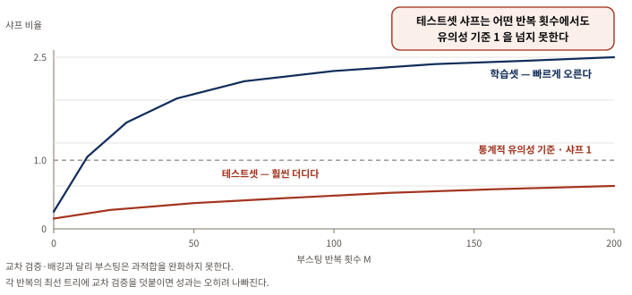
두 곡선의 벌어지는 폭 이 이 그림에서 읽어야 할 값이다. 반복 횟수를 늘리면 학습셋 샤프 비율은 빠르게 올라가지만 테스트셋 샤프 비율은 훨씬 더디게 올라간다. 실제로 테스트셋 샤프 비율은 어떤 합리적인 반복 횟수에서도 유의하지 않은 채로 남는다. 게다가 각 반복의 최선 트리에 교차 검증을 적용하면 오히려 성과가 나빠진다. 교재가 서술한 두 곡선의 상대적 형태와 유의성 기준선을 담은 AIML Quant 모식도다.분류 트리 (Classification Tree) — 상승/하락이라는 범주를 예측하다
- 수익률을 양(+)과 음(−)으로 이산화하기만 하면 이산형 반응변수를 위해 설계된 알고리즘도 쓸 수 있다.
- 회귀 트리의 분산이 지니 다양성 지수(GDI) 로 바뀔 뿐 나머지 뼈대는 똑같다.
- 테스트셋 CAGR 4.8%·샤프 0.4 — 교차 검증한 회귀 트리보다는 낫지만 랜덤 포레스트만큼은 아니다.
지금까지의 학습 알고리즘은 반응변수가 연속형이라고 가정했다. 트레이딩에서는 대체로 기대수익률에 관심이 있으니 자연스러운 일이다. 그러나 이산형(범주형) 반응변수를 위해 특별히 설계된 알고리즘도 있고 이를 마다할 이유는 없다.
분류 트리는 회귀 트리와 아주 가까운 형제다. 회귀 트리에서 노드를 나누는 최선의 변수는 자식 노드에서 반응값의 분산을 최소화하는 변수였다. 분류 트리에서는 이 분산이 그에 대응하는 지니 다양성 지수(Gini's Diversity Index, GDI) 로 바뀐다. 양(+) 또는 음(−) 두 클래스로 나누는 이진 분류에서 한 노드의 GDI 는 다음과 같다.
$$1 - p_{+}^{2} - p_{-}^{2}$$
여기서 $p_{+}$ 는 그 노드에서 양의 수익률을 가진 관측치의 비율, $p_{-}$ 는 음의 수익률을 가진 관측치의 비율이다. GDI 의 최솟값은 0 이며 이는 노드가 오직 한 클래스의 관측치로만 이루어질 때, 즉 완벽하게 분류될 때 얻어진다. 반대로 양·음이 정확히 반반이면 GDI 는 최대인 0.5 가 된다. GDI 를 순도의 반대, 곧 불순도라고 생각하면 편하다.
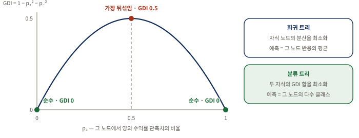
곡선의 양 끝과 꼭대기가 각각 무엇을 뜻하는지 먼저 확인한 뒤 오른쪽 두 상자를 대조해 읽는다. 노드를 나누는 최선의 변수는 두 자식 노드의 GDI 합을 최소화하는 변수, 즉 나눈 결과 양쪽이 최대한 한 클래스로 쏠리게 만드는 변수다. 자연스럽게 한 노드의 예측 반응은 그 안에서 가장 높은 비율을 차지하는 관측 클래스가 된다. AIML Quant 재구성.Python · fitctree → DecisionTreeClassifier
회귀에서 분류로 넘어갈 때 바뀌는 것은 세 군데뿐이다. 추정기가 Regressor 에서 Classifier 로, 반응이 실수에서 참·거짓으로, 평가 척도가 오차에서 정확도로 바뀐다. 나머지 인자는 그대로다.
labels = y_train >= 0 # 반응을 상승/하락으로 이산화
tree = DecisionTreeClassifier(min_samples_leaf=100,
random_state=RANDOM_SEED)
accuracy, _ = chronological_cv_classification(tree, x_train, labels)chronological_cv_classification 은 앞서 실은 회귀용 함수와 같은 TimeSeriesSplit 을 쓰되 평균제곱근오차 대신 정확도를 모은다. 이 정확도의 기준선은 0.5 이며, 그림 23 오른쪽에서 실제 값이 0.53 부근임을 볼 수 있다.
원본 대응 · 교재 MATLAB — fitrtree 를 fitctree 로 바꾸고 반응을 이산화한다
model = fitctree([ret1(trainset) ret2(trainset) ret5(trainset) ...
ret20(trainset)], retFut1(trainset) >= 0, 'MinLeafSize', 100, ...
'CrossVal', 'On', 'KFold', 5); % 반응: >=0 이면 참, <0 이면 거짓cTree.m 이다(주석 5).
이 모델로는 명백한 방식으로 신호를 낸다. 예측 반응이 양이면 매수, 음이면 공매도한다. 테스트셋에서 CAGR 은 4.8퍼센트, 샤프 비율은 0.4 로, 교차 검증한 회귀 트리보다는 낫지만 랜덤 포레스트를 적용한 회귀 트리만큼은 아니다. 물론 랜덤 포레스트를 분류 트리에도 적용할 수 있으며 이는 연습문제 4.10 으로 남는다.
반응을 꼭 양/음 수익률로만 나눌 필요는 없다. 높은 양의 수익률을 한 클래스로, 그 여집합을 다른 클래스로 만든 뒤 이 고수익 클래스가 예측될 때만 매수 신호를 낼 수도 있다. 마찬가지로 낮은 음의 수익률을 한 클래스로 만들어 그 클래스가 예측될 때 공매도 신호를 낼 수도 있다. 다만 이렇게 해도 전략 성과가 나아지지는 않는 듯하다는 것이 저자의 관찰이다.
서포트 벡터 머신 (Support Vector Machine) — 가장 넓은 간격으로 두 무리를 가르다
- m차원 공간에서 플러스와 마이너스를 갈라 주는 초평면(hyperplane) 을 찾되, 가능한 한 가장 넓은 마진(margin) 으로 가른다.
- 마진을 넓게 잡는 것은 표본 외 데이터에 대한 안전 여유를 확보하는 일이며, 이것이 SVM 이 과적합에 강한 근본 이유다.
- 테스트셋 CAGR 13.3%·샤프 0.8 — 이 장의 SPY 실험 가운데 가장 좋다. 흥미롭게도 학습셋에서는 오히려 더 나쁘다.
각 표본 데이터가 m차원 공간의 한 점으로 놓여 있다고 상상해 보자. m 은 예측변수의 수이고 예측변수 자체는 여전히 연속 변수다. 이 점들 중 일부에는 플러스, 나머지에는 마이너스 라벨이 붙어 있고 이것이 우리의 이산 반응이다. SVM 은 이 공간에서 두 무리를 갈라 주는 초평면을 찾되 가능한 한 가장 넓은 여백으로 갈라 놓으려 한다.
이것이 가능하다면 분류 과제는 끝난 것이다. 어떤 데이터가 이 초평면의 어느 쪽에 있는지만 보면 그 반응 범주를 정확히 알 수 있기 때문이다. 분리 초평면에 가장 가까이 붙은 플러스들이 한 무리의 서포트 벡터(support vector) 를 이루고 가장 가까이 붙은 마이너스들도 마찬가지다. 이 두 무리 사이의 간격이 바로 SVM 으로 최대화한 마진이며, 경계를 떠받치는(support) 벡터라는 이름이 여기서 나온다.
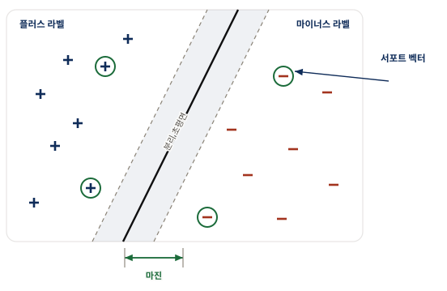
굵은 선의 위치가 아니라 회색 띠의 폭 이 이 그림의 요점이다. 두 무리를 가르는 선은 무수히 많이 그을 수 있는데, 그중 한쪽 무리에 아슬아슬하게 붙은 선을 고르면 새 데이터가 조금만 달라져도 반대편으로 넘어가 오분류된다. 양쪽에서 최대한 멀찍이 떨어진 선을 고르면 데이터가 다소 흔들려도 여전히 올바른 쪽에 머문다. 초록 원으로 강조한 서포트 벡터만이 경계 위치를 정하며, 나머지 점은 아무리 멀리 있어도 경계에 영향을 주지 않는다. AIML Quant 재구성.물론 실제 데이터가 이렇게 순순히 갈라지는 경우는 드물다. 최선의 초평면을 써도 오른쪽에 플러스가, 왼쪽에 마이너스가 섞여 있기 마련이다. 그래서 분리 마진을 최대화하는 동시에 오분류된 점에 벌점을 매기는 벌점 항을 최소화함으로써 최선의 초평면을 찾는다(수학적 세부는 Anonymous, 2015).
Python · fitcsvm → SVC, 다만 표준화가 먼저다
SVM 은 두 무리 사이의 간격을 재는 모델이라 변수마다 크기가 다르면 간격 자체가 왜곡된다. 그래서 SVC 를 단독으로 쓰지 않고 StandardScaler 와 묶어 파이프라인으로 만든다. 이렇게 해야 교차 검증의 각 폴드에서 학습 조각의 평균·표준편차만으로 표준화가 이루어지고 검증 조각의 정보가 새지 않는다.
svm = make_pipeline(StandardScaler(), SVC(kernel="rbf", C=1.0))
accuracy, _ = chronological_cv_classification(svm, x_train, labels)linear·polynomial·rbf 세 커널을 같은 방식으로 재어 학습셋만 보고 하나를 고른다. 결과는 그림 23 오른쪽에 있으며 세 커널의 차이가 1퍼센트포인트 미만이라 이 문제에서는 커널 선택이 성과를 가르지 않는다. 발췌에는 그중 하나만 실었다.
원본 대응 · 교재 MATLAB — fitctree 를 fitcsvm 으로 바꾼다
model = fitcsvm([ret1(trainset) ret2(trainset) ret5(trainset) ...
ret20(trainset)], retFut1(trainset) >= 0, 'CrossVal', 'On', ...
'KFold', 5); % 반응: >=0 이면 참, <0 이면 거짓svm.m 이다(주석 6).
| 기법 | 모델의 모양 | 분할·최적화 기준 | 표본 외 CAGR · 샤프 |
|---|---|---|---|
분류 트리 DecisionTreeClassifier (교재 fitctree) | 기껏해야 구간별 선형 | 두 자식 노드의 GDI 합 최소화 | 4.8% · 0.4 |
서포트 벡터 머신 SVC (교재 fitcsvm) | 초평면 하나 — 진짜 선형 | 마진 최대화 + 오분류 벌점 최소화 | 13.3% · 0.8 |
커널 — 곡면으로 데이터를 가르기
때로는 SVM 이 데이터를 분류하려면 예측변수를 비선형으로 변환해야 한다. 이 변환을 맡는 것이 커널(Kernel) 함수 다. 선형 커널 대신 다항 함수를 지정할 수 있고, 커널 스케일을 1 로 고정하는 대신 'auto' 로 두어 알고리즘이 최적 스케일을 고르게 할 수도 있다. 저자는 이 새 설정을 시도해 봤지만 결과는 나아지지 않았고, 방사 기저(Gaussian) 함수 를 쓰면 결과가 약간 개선되었다고 보고한다. 다층 퍼셉트론(sigmoidal) 함수 도 있지만 이는 Statistics and Machine Learning Toolbox 에 없어 직접 구성해야 한다(연습문제 4.5).
예측변수에 비선형 커널을 적용하는 것은 평평한 판 대신 굽은 막으로 데이터를 가르는 것과 같다. 커널 변환을 이해하는 또 다른 방식은, 데이터를 더 높은 차원의 공간으로 옮겨 그곳에서는 초평면이 깔끔하게 가를 수 있도록 만드는 것이라는 관점이다. 그 초평면을 원래 공간으로 되돌리면 직선이 아니라 곡선으로 나타난다. 이것은 훨씬 큰 유연성을 주지만 그만큼 과적합의 여지도 커진다.
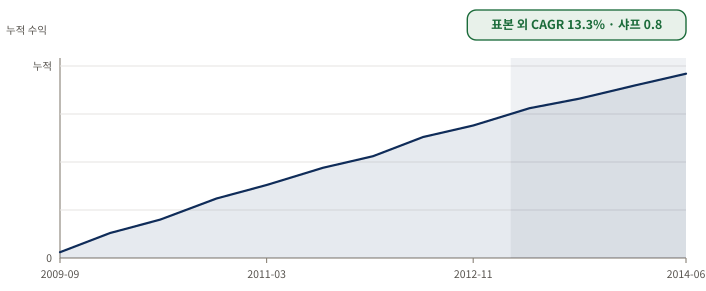
기울기가 구간마다 어떻게 달라지는지를 보는 그림이다. 앞선 평균회귀 모델들과 달리 최근 기간에도 성과가 꺾이지 않는다. 저자는 이 초과 성과가 기본 버전의 SVM 이 만드는 모델이 진짜로 선형이기 때문일 것이라고 본다 — 결국 그것은 하나의 초평면일 뿐이고, 분류 트리는 기껏해야 구간별 선형으로만 볼 수 있다. 선형 모델은 과적합을 피하고 표본 외 데이터에서 더 나은 결과를 낸다. 흥미롭게도 이 선형 모델은 학습셋에서는 오히려 더 나쁜 성적을 내는데 아마 같은 이유 때문일 것이다. 교재가 서술한 구간별 지속성과 보고된 지표를 담은 AIML Quant 모식도다.은닉 마르코프 모델 (Hidden Markov Model) — 눈에 보이지 않는 시장 국면을 추정하다
- 앞 절들의 "상승일/하락일"은 눈으로 볼 수 있었지만 "강세장/약세장"은 그렇지 않다 — 관측되지 않는 상태를 다루는 비지도 학습 의 영역이다.
- HMM 은 전이 확률 행렬 과 방출 확률 행렬 두 장으로 은닉 상태와 관측값을 잇는다.
- 학습셋 CAGR 8.7% 로 제법 괜찮았지만 테스트셋에서는 1% 에 그쳤다. 추정할 매개변수가 늘어난 만큼 데이터 스누핑 편향의 여지도 커진다.
트레이더들은 어떤 시장 국면을 강세장 또는 약세장이라 부르곤 한다. 그런데 강세장에도 하락일이 있고 약세장에도 상승일이 있으니 무엇이 강세장이고 약세장인지는 사실 명확하지 않다. 평균회귀 시장 대 추세 시장, 위험선호 국면 대 위험회피 국면도 마찬가지다.
머신러닝 연구자들은 이런 모호함에 꽤 익숙하다. 더 정확히 말하면 그들은 클래스 자체가 관측되지 않는 분류 문제에 익숙하다. 앞 절에서 SVM 에게 분류시킨 상승/하락일은 눈으로 볼 수 있었지만 지금은 그렇지 않다. 이렇게 관측할 수 없는(은닉된) 상태를 분류하는 일이 비지도 학습(unsupervised learning) 의 영역이다.
지도 학습과 비지도 학습의 차이를 여기서 분명히 해 둘 필요가 있다. 앞 절들에서는 "상승일/하락일"이라는 정답 라벨을 눈으로 확인할 수 있었고 알고리즘은 그 정답을 보며 배웠다. 그러나 "강세장/약세장"은 누구도 그날의 정답을 딱 잘라 말해 줄 수 없다. 정답표 없이 오직 관측된 상승·하락일의 나열만 보고 그 뒤에 숨은 상태를 스스로 추론해야 한다.
은닉 상태를 다루는 가장 유명한 모델 중 하나가 은닉 마르코프 모델(Hidden Markov Model, HMM) 이다. 강세장과 약세장을 두 개의 은닉 상태로 상상하고, 전이 확률 행렬(transition probability matrix) 이 하루에서 다음 날로 넘어갈 때 한 상태에서 다른 상태로 옮겨갈 확률을 기술한다고 보면 된다. 이 행렬의 $(i, j)$ 성분은 오늘 상태 $i$ 에서 내일 상태 $j$ 로 갈 확률이다.
$$T=\begin{bmatrix}0.60&0.40\\0.75&0.25\end{bmatrix}$$
강세장이 다음 날에도 강세장으로 남을 확률이 0.6 이고 약세장으로 전이할 확률이 0.4 라는 뜻이다. 약세장이 다음 날에도 약세장으로 남을 확률은 0.25, 강세장으로 전이할 확률은 0.75 다. 당연히 각 행의 확률은 합이 1 이어야 한다.
전이 확률 외에도 각 상태가 하락일과 상승일을 각각 방출할 확률을 알아야 한다. 이 하락일·상승일을 방출(emission) 또는 관측값(observable) 이라 부르며, 이 확률은 방출 확률 행렬(emission probability matrix) 로 정리된다. 이 행렬의 $(i, j)$ 성분은 상태 $i$ 가 방출 기호 $j$ 를 낼 확률이다.
$$E=\begin{bmatrix}0.19&0.81\\0.97&0.03\end{bmatrix}$$
하락일을 첫 번째 방출 기호, 상승일을 두 번째 방출 기호로 두면 이 행렬은 강세 상태가 하락일을 낼 확률이 19퍼센트, 상승일을 낼 확률이 81퍼센트임을 말해 준다. 약세 상태가 하락일을 낼 확률은 97퍼센트, 상승일을 낼 확률은 3퍼센트다.
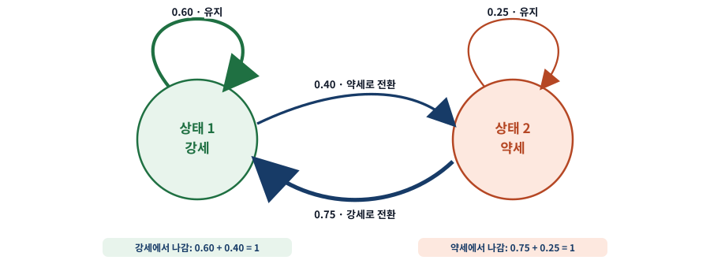
각 원에서 나가는 두 화살표의 확률 합이 1 인지 확인하며 읽는다. 자기 순환 화살표의 굵기 차이가 곧 상태의 끈질김 이다. 강세는 0.60 으로 비교적 이어지지만 약세는 0.25 로 하루 만에 벗어나기 쉽다. 상태 이름은 우리가 붙인 것일 뿐이며, 평균회귀와 추세추종, 위험선호와 위험회피, 심지어 탐욕과 공포라 불러도 무방하고 학습 알고리즘은 이를 전혀 알아차리지 못한다. AIML Quant 재구성.두 행렬을 함께 읽으면 HMM 이 어떻게 은닉 상태를 쓸모 있게 만드는지 보인다. 우리 눈에는 상승일과 하락일만 보이지만 그 뒤에 강세·약세라는 보이지 않는 스위치가 있다고 가정하는 것이다. 강세 상태는 상승일을 81퍼센트로 쏟아내고 약세 상태는 하락일을 97퍼센트로 쏟아내니 두 상태는 서로 뚜렷이 다른 성격을 가진다. 여기에 전이 행렬이 상태가 얼마나 끈질기게 이어지는지를 더해 준다. 이렇게 하면 "어제 하락했으니 오늘도 하락할 확률이 조금 더 높다" 같은, 하나의 고정된 확률로는 담기 어려운 시간적 쏠림을 모델이 표현할 수 있게 된다.
우리가 세운 유일한 가정은 상승일과 하락일이 관측 불가능한 두 상태에서 생성된다는 것뿐이다. 이 가정은 상승·하락일을 관측할 확률이 하나의 정상 확률분포로는 만족스럽게 설명되지 않아 보인다는 사실을 담아내기 위한 것이다. 다시 말해 HMM 은 3장에서 다룬 것들보다 더 복잡한 시계열 모델일 뿐이며, 추정할 매개변수가 더 많고 데이터 스누핑 편향의 여지도 더 크다.
매개변수 학습 — EM 알고리즘
다른 학습 알고리즘과 마찬가지로 매개변수 — 전이 행렬 T, 방출 행렬 E, 경우에 따라 방출에 대한 사전 확률분포 — 는 학습셋으로 추정해야 한다. HMM 을 비롯해 은닉 상태를 가진 모든 모델에서 가장 유명한 비지도 학습 알고리즘 중 하나가 EM 알고리즘(EM algorithm) 이다(Murphy, 2012).
Mathworks 의 Statistics and Machine Learning Toolbox 에도 EM 의 한 버전을 구현한 hmmtrain 함수가 있지만, 저자는 알 수 없는 이유로 종종 특이해(singular solution)를 반환한다고 보고한다. 그래서 학습에는 오픈소스인 Bayes Net Toolbox for MATLAB 을 썼고, 프로그램 hmm_train.m 에서 보이듯 이 툴박스의 learn_params_dbn_em 함수를 사용했다. 학습의 목표는 늘 그렇듯 방출의 로그 가능도를 최대로 만드는 매개변수를 찾는 것이다. 여러 개의 국소 최댓값이 있을 것으로 예상되므로 저자는 이 학습을 10번 돌려 각 최댓값에서의 가능도를 기록한 뒤 가장 높은 것을 골랐다. 이를 SPY 일별 수익률에 돌리면 앞서 쓴 T 와 E 행렬이 나온다.
예측 — 다음 날의 방출 확률 구하기
예측에는 다시 Statistics Toolbox 로 돌아간다. 필요한 함수는 hmmdecode 이며, 이는 초기 시점부터 시점 $t$ 까지의 은닉 상태 확률을 계산해 pstates(1:t) 에 담는다. 시점 $t + 1$ 의 방출을 예측하려면 pstates(t + 1) 이 필요한데 이는 $T^{\prime} \times pstates(t)$ 로 주어진다. 그러면 방출 확률은 $Pemis(t + 1) = E^{\prime} \times T^{\prime} \times pstates(t)$ 다.
Python · 매 시점 전체 이력을 다시 넣지 않는다
아래 MATLAB 은 시점마다 hmmdecode(data(1:t)', T, E) 로 처음부터 t까지의 이력 전체 를 다시 훑는다. 길이 N 의 계열에서 N번 반복하므로 계산량이 길이의 제곱으로 늘어난다. 재현에서는 전방 확률 alpha 하나만 들고 다니며 한 걸음씩 갱신했다 — 결과는 같고 한 번만 훑는다.
observations = (returns >= 0).astype(int) # 관측은 부호뿐
alpha = HMM_PRIOR * HMM_EMISSION[:, observations[0]]
for index in range(len(observations) - 1):
emission = HMM_EMISSION[:, observations[index]]
alpha = (alpha @ HMM_TRANSITION) * emission
alpha = alpha / alpha.sum() # 매 걸음 정규화
forecast[:, index + 1] = HMM_EMISSION.T @ HMM_TRANSITION.T @ alphaHMM_TRANSITION, HMM_EMISSION 으로 고정해 두고 그 아래에서 신호만 다시 계산하는 재생(replay)이다. 그래서 표 14 의 HMM 행이 소수점 여섯 자리까지 일치할 수 있었다. 첫 걸음의 예외 처리와 방출 확률을 emission 변수로 뺀 것은 발췌를 읽기 쉽게 하려는 정리다.
원본 대응 · 교재 MATLAB — 매 시점 전체 이력을 다시 넣는다
pemis = NaN(2, size(data, 1));
for t = 1:size(data, 1)-1
[pstates] = hmmdecode(data(1:t)', T, E);
pemis(:, t+1) = E'*T'*pstates(:, end);
endhmmdecode 를 실행해야 한다.
즉 시점 $t$ 에서 최신 데이터 하나만 추가하면 pstates(t) 가 갱신되는 온라인 알고리즘이 아니다. 대조적으로 HMM 의 연속형 사촌인 칼만 필터(Kalman filter) 는 온라인 알고리즘으로, Chan(2013)의 논의와 이 책 3장에서 다뤘듯이 은닉 상태 변수와 여타 매개변수의 추정치를 그때그때 갱신할 수 있었다. HMM 용 온라인 디코딩 함수를 찾거나 직접 구현하는 일은 연습문제 4.6 으로 남는다.
다음 날 방출 확률이 있으면 상승 확률이 하락 확률보다 높으면 SPY 를 사고 그 반대면 파는 단순 전략을 만들 수 있다. 저자는 이를 위해 hmm_test.m 프로그램을 만들었다. 학습셋에서는 CAGR 8.7퍼센트로 제법 괜찮았지만 테스트셋에서는 CAGR 이 1퍼센트에 그쳤다.
이 테스트셋 수치는 이 리포트가 재현 감사에서 확인한 유일한 불일치다. 저자가 배포한 hmm_test.m 자체에 기록된 출력 주석은 표본 외 CAGR 을 −0.010173, 즉 음의 1.0퍼센트로 적고 있다. 자세한 내용은 보충 A 에서 다룬다.
다음 날 수익률을 예측하는 HMM 에는 많은 변형이 있다. 데이터 전반부를 학습셋으로 삼아 매개변수를 추정하는 대신 새로 관측되는 방출마다 다시 추정할 수 있다(연습문제 4.7). 이산 방출 대신 이를 Gaussian 이나 Student-t 같은 모수적 분포를 따르는 연속 변수로 모델링할 수도 있다(Dueker, 2006). 방출이 은닉 상태 변수에만 의존하도록 두는 대신 이 장의 지도 학습 모델들이 쓴 예측변수 같은 관측 입력 변수에도 의존하게 할 수 있다.
덤 — 가장 그럴듯한 상태 시퀀스 (Viterbi)
HMM 에는 다음 방출을 예측하는 것 말고도 부수적인 이점이 있다. 관측된 방출이 주어지면 HMM 은 가장 그럴듯한 은닉 상태 시퀀스가 무엇인지 알려 줄 수 있다. 이를 위해 hmmviterbi 함수를 쓴다. 디코딩 알고리즘을 발명했고 스마트폰 속 칩을 만들었을 Qualcomm 의 공동 창업자 Andrew Viterbi 를 기려 붙인 이름이다.
원본 대응 · 교재 MATLAB — 한 줄로 국면 시퀀스를 얻는다
states = hmmviterbi(data, T, E);Python · 비터비 경로는 재현하지 않았다
hmmviterbi 는 전체 관측을 가장 잘 설명하는 하나의 상태 경로 를 되짚어 찾는다. 재현에서 계산한 것은 그것이 아니라 앞의 리스팅에 나온 시점별 전방 확률이다. 둘은 목적이 다르다. 비터비 경로는 계열 전체를 본 뒤에 확정되므로 국면을 사후에 설명하는 데 쓰이고, 전방 확률은 그 시점까지의 정보만 쓰므로 거래 신호로 쓸 수 있다.
가장 그럴듯한 상태 시퀀스를 아는 것이 무슨 이득일까. 저자의 답은 실용적이다 — 다음번에 누군가 지금이 강세장인지 약세장인지 묻거든 HMM 에 물어보고 명확히 정의된 답을 줄 수 있다(연습문제 4.8). 다만 주석 7 에서 저자는 여기에 단서를 단다. 국면을 알아내는 일이 방송의 질문에 답하는 것 이상의 쓸모가 있어야 한다고 여길 수 있지만, 궁극적으로 우리는 기대수익률에만 관심이 있으며 국면은 이론적 구성물일 뿐이고 국면 전환도 마찬가지라는 것이다.
신경망 (Neural Network) — 시그모이드를 겹쳐 임의의 함수를 근사하다
- 임의의 함수를 시그모이드 함수(sigmoid function) 의 선형 함수로, 다시 그 위에 시그모이드를 씌운 것의 선형 함수로 겹겹이 근사한다.
- 표현력이 커진 만큼 잡음까지 외워 버리는 과적합 위험도 커진다 — 은닉층과 뉴런이 많아질수록 상황은 나빠진다.
- 재학습과 평균화 두 방법 모두에서 결론은 같다: 노드 하나짜리 가장 단순한 네트워크만이 가장 좋고 일관된 결과를 낸다.
신경망은 머신러닝 알고리즘 중 가장 잘 알려진 것일지 모른다. 오랜 역사만큼 수많은 하위 유형·아키텍처·학습 알고리즘으로 갈라져 왔고, Mathworks 는 아예 모든 신경망 알고리즘을 별도의 Neural Network Toolbox 로 모아 두었을 정도다. 여기서는 SPY 수익률 예측에 알맞은 가장 기본적인 아키텍처만 다룬다.
신경망은 이렇게 단순하게 이해할 수 있다. 임의 개수의 예측변수에 대한 어떤 함수든, 시그모이드 함수 $S(x) = 1/(1 + e^{-x})$ 의 선형 함수로, 또는 시그모이드 함수들의 선형 함수에 다시 시그모이드를 씌운 것의 선형 함수로, 그런 식으로 겹겹이 반복해 근사하는 방법이다.
시그모이드가 왜 핵심인가. 시그모이드는 입력을 0 과 1 사이로 부드럽게 눌러 주는 S자 곡선인데, 이 완만한 굴곡이 바로 휘어짐을 만들어 낸다. 직선만 아무리 더하고 곱해 봐야 결과는 여전히 직선이다. 그런데 그 사이사이에 시그모이드라는 휘어짐을 끼워 넣으면, 이들을 충분히 겹쳤을 때 어떤 복잡한 곡선이든 원하는 만큼 가깝게 흉내 낼 수 있다. 신경망이 임의의 함수를 근사한다고 말할 수 있는 힘이 여기서 나온다. 다만 그 유연함은 양날의 검이어서 표현력이 커진 만큼 잡음까지 외워 버리는 과적합 위험도 커진다.
순방향 네트워크의 구조
가장 기본적인 아키텍처는 순방향 네트워크(feed forward network) 다. 여러 개의 은닉층(hidden layer) 으로 이루어지고, 각 은닉층은 저마다 다른 가중치를 가진 시그모이드 함수를 나타내는 여러 개의 뉴런(neuron) 을 담으며, 마지막 출력층(output layer) 은 선형 함수를 나타낸다. Neural Network Toolbox 에서는 각 층의 뉴런 수를 feedforwardnet 의 입력 매개변수 hiddenSizes 로 지정한다. 예컨대 hiddenSizes = [2 4 3] 은 첫 번째 층에 뉴런 2개, 두 번째 층에 4개, 세 번째 층에 3개가 있음을 뜻한다.
각 뉴런은 입력 벡터의 성분들을 저마다의 가중치로 가중합한 값 하나를 받는다.
$$I_{j} = \sum_{i=1}^{4}(w_{j,i}x_{i} + w_{j,0})$$
여기서 $I_{j}$ 는 $j$ 번째 뉴런에 들어가는 입력(스칼라), $w_{j,i}$ 는 입력 벡터의 $i$ 번째 성분에 곱해지는 가중치(학습 단계에서 결정됨), $x_{i}$ 는 입력 벡터의 $i$ 번째 성분, $w_{j,0}$ 는 그 뉴런의 상수 오프셋이다. 이렇게 만든 각 선형 함수의 출력은 그에 대응하는 시그모이드 함수로 전달된다.
만약 시그모이드 함수가 그냥 항등 함수 $S(I_{j}) = I_{j}$ 였다면 이 뉴런은 단계적 회귀 절 앞부분에서 다룬 평범한 다중 선형 회귀와 다를 바 없다. 그러나 우리는 비선형 함수가 더 잘 맞으리라 믿고, 그래서 신경망은 시그모이드 형태를 쓴다.
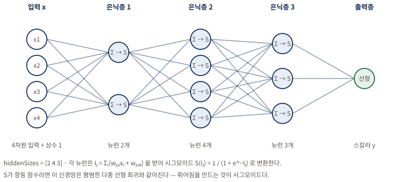
한 노드에서 다음 층으로 뻗는 선의 개수를 세어 보면 가중치의 수가 층을 지날 때마다 어떻게 불어나는지 보인다. 가중치로 곱하고 성분들을 합산하고 시그모이드로 변환하는 이 연산이 층마다 반복된다. 출력이 벡터라면 그 차원만큼 출력층 노드가 있게 된다. 시그모이드를 몇 겹으로 쌓을지, 각각에 얼마나 가중치를 줄지, 한 함수의 출력을 다른 함수의 입력에 어떻게 이을지는 오직 학습셋에 대한 실험과 최적화로만 정할 수 있다. AIML Quant 재구성.가장 단순한 네트워크부터 — 그리고 과적합과의 싸움
SPY 예측 문제에서 이 모든 은닉층과 여러 뉴런으로 시작하는 대신 은닉층 하나에 뉴런 하나(hiddenSizes = 1)로 시작한다. 언제나처럼 과적합이 가장 큰 걱정거리이고 은닉층과 뉴런이 많아질수록 상황은 나빠진다. 가중치를 정하는 학습 알고리즘 자체는 다루지 않되 한 가지만 짚을 필요가 있다. 가중치의 초기 추정값에는 무작위성이 있어 그 초기값이 어떠했느냐에 따라 최종 네트워크가 학습셋 예측 오차의 서로 다른 국소 최솟값에 수렴한다.
Python · 조기 종료 대신 시드 열 개를 평균한다
MATLAB 은 divideParam 으로 검증셋을 떼어 조기 종료를 건다. 이 재현은 다른 길을 골랐다. early_stopping=False 로 두고 난수 시드만 바꾼 신경망 열 개의 예측을 평균 한다. 신경망 하나의 결과가 시드에 크게 흔들리기 때문인데, 그 흔들림 자체를 그림 23 왼쪽에 그려 두었다.
mlp = make_pipeline(StandardScaler(),
MLPRegressor(hidden_layer_sizes=(8, 4),
activation="tanh", alpha=0.01,
max_iter=500, early_stopping=False,
random_state=seed))
mlp.fit(x_train, (y_train - mean) / scale) # 반응도 표준화하고
prediction = mlp.predict(x_test) * scale + mean # 원래 단위로 되돌린다seed 1부터 10까지 돌린 뒤 np.mean(np.vstack(predictions), axis=0) 으로 평균한다. 예측변수뿐 아니라 반응까지 표준화한 뒤 원래 단위로 되돌리는 이 처리가 바로 다음 절에서 다룰 정규화의 실제 구현이다.
원본 대응 · 교재 MATLAB — 조기 종료를 위한 검증셋 비율
net.divideParam.trainRatio = 0.6; % 기본값 0.7 → 예측 오차 최소화에 쓸 비율
net.divideParam.valRatio = 0.4; % 기본값 0.15 → 조기 종료용 검증 데이터
net.divideParam.testRatio = 0; % 백테스트용 테스트셋은 따로 있다nn_feedfwd.m 이다(주석 8).
같은 난수 시드를 쓰면 표본 내 CAGR 은 19퍼센트지만 표본 외 CAGR 은 −4퍼센트다. 아직 과적합 문제를 풀지 못한 것이다. hiddenSizes = [1, 1] 로 은닉층을 늘려 봐도 표본 내도 표본 외도 나아지지 않는다. 반대로 hiddenSizes = [2, 2] 로 층당 노드를 늘리면 표본 내 CAGR 20퍼센트, 표본 외 CAGR 5퍼센트를 얻는다. 큰 개선처럼 보이지만 결과가 난수 시드에 무척 민감하다. 이 민감한 의존성을 줄이고 네트워크를 더 강건하게 만들 방법이 필요하다.
강건성을 높이는 두 가지 길 — 재학습과 평균화
초기 추정값 의존성을 줄이는 방법은 두 가지다. 첫째는 재학습(retraining) 으로 교차 검증과 매우 닮았다. 가중치 초기값을 다르게, 그리고 데이터를 학습셋(원래 학습셋의 60퍼센트)과 검증셋(나머지 40퍼센트)으로 다르게 골라 100개의 서로 다른 네트워크를 학습시킨다. 각 네트워크의 검증셋 예측 오차를 기록하고 그 오차가 가장 낮은 네트워크를 테스트용으로 고른다. 이제 별도 검증셋이 있으므로 각 네트워크의 valRatio 는 0 으로 둔다(주석 9, 전체 코드 nn_feedfwd_retrain.m).
| CAGR (네트워크 100개) | 은닉층 1개 | 은닉층 2개 | 은닉층 3개 | |||
|---|---|---|---|---|---|---|
| 표본 내 | 표본 외 | 표본 내 | 표본 외 | 표본 내 | 표본 외 | |
| 뉴런 1개 | 29% | 3.2% | 28% | −2.0% | 31% | −3.9% |
| 뉴런 2개 | 40% | −3.3% | 27% | −3.4% | 33% | −5.4% |
| 뉴런 3개 | 28% | −10.0% | 47% | 1.4% | 24% | −12.0% |
은닉층 수나 층당 뉴런 수를 늘리면 표본 내 성능은 종종 좋아지지만 표본 외 성능은 오히려 나빠짐을 볼 수 있다. 이 실험의 결론은 과적합을 피하려면 이 문제에서는 층 하나에 뉴런 하나만 써야 한다는 것이다.
둘째 방법은 역시 100개의 네트워크를 학습시키되 최선 하나를 고르는 대신 100개 모두의 예측 수익률을 평균 하는 것이다. 배깅과 매우 닮았다(주석 10, 전체 코드 nn_feedfwd_avg.m).
| CAGR (네트워크 100개) | 은닉층 1개 | 은닉층 2개 | 은닉층 3개 | |||
|---|---|---|---|---|---|---|
| 표본 내 | 표본 외 | 표본 내 | 표본 외 | 표본 내 | 표본 외 | |
| 뉴런 1개 | 26% | 1.9% | 28% | −0.57% | 23% | −2.8% |
| 뉴런 2개 | 52% | −6.2% | 54% | −0.5% | 62% | −2.5% |
| 뉴런 3개 | 43% | −0.62% | 55% | 0.7% | 79% | 5.5% |
신경망 앙상블을 학습시키는 이 두 방법을 살펴본 결론은 노드 하나짜리 가장 단순한 네트워크만이 가장 좋고 일관된 결과를 낸다는 것이다. 그런데 그 결과조차 앞서 다룬 방법들에 비하면 꽤 약한 편이다.
두 표를 볼 때 표본 외 열에서 가장 큰 값 하나를 찾는 것은 위험하다. 평균화 표의 은닉층 3개·뉴런 3개 칸은 표본 외 5.5퍼센트로 가장 높지만, 같은 열의 인접 칸들은 음수이고 재학습 표의 같은 자리는 −12.0퍼센트다. 이런 들쭉날쭉함 자체가 그 칸의 값을 신뢰할 수 없다는 신호다. 반면 뉴런 1개·은닉층 1개 칸은 두 표에서 각각 3.2퍼센트와 1.9퍼센트로 일관되게 양수다.
딥러닝과의 인지 부조화
이 결론은 인지 부조화(cognitive dissonance) 를 일으킬 수 있다. 최근 딥러닝(deep learning) 이 놀라운 패턴 인식 능력을 가진 기법으로 대대적으로 선전되어 왔기 때문이다. 딥러닝은 층은 많고 층당 노드는 적은 신경망이다. 딥러닝 연구자들은 이런 구성이 층은 적고 노드는 많은 네트워크보다 학습이 더 쉽고 예측력도 더 낫다고 주장한다.
저자의 해석은 조건을 붙인다 — 그런 관찰은 아마 입력 벡터의 차원이 더 높고(즉 예측변수가 더 많고) 데이터 표본도 더 많은 문제에서만 참일 것이라는 것이다. 이렇게 특징이 풍부한 데이터셋은 호가창이나 뉴스 같은 비정형 데이터에 접근하지 않는 한 금융에서는 흔치 않다. 다시 말해 이 절의 결론은 "딥러닝이 나쁘다"가 아니라 "예측변수 4개, 행 약 1,000개짜리 문제에서는 깊이가 보상받지 못한다"는 조건부 관찰이다.
데이터 집계 및 정규화 — 500종목의 데이터를 하나로 합치기
- 종목마다 별도 모델을 학습시켜 500개를 만들면 데이터가 늘어난 이점이 없다 — 하나의 벡터로 집계(aggregate) 해 단 하나의 모델만 학습시켜야 한다.
- 집계하려면 먼저 정규화(normalize) 해야 한다. 종목마다 수익률의 변동성이 크게 다르기 때문이다.
- 정규화한 경우 표본 외 CAGR 2.3%·샤프 0.9, 정규화하지 않은 경우 −0.7%·−0.4 — 이 한 단계가 성패를 갈랐다.
머신러닝 알고리즘은 학습 데이터가 많을수록 덕을 본다. 지금까지처럼 단 하나의 상품 수익률만 예측하려 들면 만들어진 모델은 과적합되기 십상이다. 그렇다면 SPY 하나 대신 SPX 지수의 모든 구성 종목 수익률을 예측하면 데이터가 500배 많아지는 셈 아닐까. 어떤 의미에서는 그렇지만 각 종목마다 별도 모델을 순진하게 학습시켜 결국 500개의 모델을 만들면 이야기가 다르다.
왜 정규화가 필요한가
서로 다른 종목의 데이터를 합칠 때 정규화가 필요한 이유는 종목마다 수익률의 변동성이 크게 다르기 때문이다. 예를 들어 "직전 수익률이 100퍼센트를 넘으면 그 종목을 공매도하라"라는 규칙은 합리적이지 않다. 오프라 윈프리가 WTW 에 지분 투자를 결정한 날 WTW 는 하루에 100퍼센트 넘게 뛰었지만, 시가총액 1,880억 달러가 넘는 WMT 는 세상 끝날까지도 그런 날을 보지 못할 수 있기 때문이다.
그러니 어떤 머신러닝 알고리즘에 넣기 전에 종목의 예측변수를 그 종목의 변동성으로 정규화해야 한다. 물론 이미 정규화된 예측변수에는 해당하지 않는다. 상대강도지수(Relative Strength Index) 같은 기술적 지표는 이미 정규화되어 있어 추가 처리가 필요 없다. 예측변수와 마찬가지로 반응변수도 같은 방식으로 정규화해야 한다. 어떤 종목이든 다음 날 수익률이 10퍼센트일 것이라 예측하는 것은 합리적이지 않다.
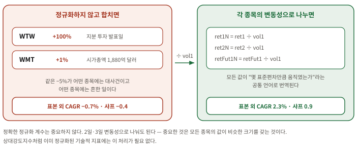
두 상자의 아래쪽 성적 칸을 먼저 대조한 뒤 위로 거슬러 읽는다. 정규화하지 않으면 변동성이 큰 소수의 종목이 모델을 좌지우지한다. 알고리즘은 "수익률 −5% 면 매수" 같은 규칙을 세우겠지만 이 −5% 는 어떤 저변동성 종목에게는 대사건이고 어떤 고변동성 종목에게는 흔한 일이다. 각 수익률을 그 종목의 변동성으로 나눠 주면 비로소 모든 종목의 값이 몇 표준편차만큼 움직였는가라는 공통 언어로 번역되어, 500개 종목의 데이터를 한 모델이 일관되게 학습할 수 있게 된다. AIML Quant 재구성.원본 대응 · 교재 MATLAB — 예측변수와 반응변수를 같은 변동성으로 나눈다
rTree_SPX.m 예제는 이전 절들과 똑같은 예측변수로 SPX 지수 구성 종목의 미래 1일 수익률을 예측하되 이 예측변수들을 모두 과거 일별 수익률 변동성으로 정규화한다.
ret1N = ret1./vol1;
ret2N = ret2./vol1;
ret5N = ret5./vol1;
ret20N = ret20./vol1;
retFut1N = retFut1./vol1; % 반응변수에도 같은 처리Python · 같은 목적, 다른 척도
교재는 최근 변동성 vol1 로 나눈다. 재현 실험은 같은 목적을 StandardScaler 로 달성했다 — 변수마다 다른 크기를 고르게 만들어 모델이 큰 숫자를 가진 변수에 끌려가지 않게 한다는 목적은 같지만, 나누는 기준이 시점마다 달라지는 변동성 이냐 학습 구간 전체의 표준편차 냐가 다르다. 앞의 신경망 리스팅에서 예측변수와 반응을 함께 표준화한 두 줄이 그 구현이다.
수익률을 2일 변동성이나 3일 변동성 등으로 나눠도 무방하다. 정확한 정규화 계수는 중요하지 않고, 중요한 것은 정규화된 수익률 변수들이 모두 비슷한 크기를 갖도록 하는 것이다. 2007년 1월 3일부터 2013년 12월 31일까지의 이 데이터는 CRSP 에서 얻었으며 생존편향(survivorship bias) 이 없다(주석 11). 또한 통합 종가와 관련된 문제를 피하려고 가격으로는 장 마감 시점의 중간가격(midprice) 을 쓴다.
reshape로 행렬을 하나의 벡터로 펴기
이전 절의 변수들과 달리 이 변수들은 T × S 행렬이다. T 는 데이터의 과거 일수, S 는 종목 수이며, 실제 S 는 500보다 큰데 과거에 SPX 에 있었지만 지금은 빠진 종목들도 넣어야 하기 때문이다. 서로 다른 종목의 데이터 열들을 하나의 (T × S) × 1 벡터로 합치기 위해 reshape 함수를 쓴다.
원본 대응 · 교재 MATLAB — 종목 축을 펴서 한 모델에 넣는다
학습과 예측은 이전과 똑같이 진행된다. 학습 알고리즘으로는 교차 검증한 회귀 트리를 쓴다. 다만 최선의 트리가 뽑히고 나면 성능 지표를 계산하기 전에 예측 수익률을 담은 벡터를 다시 T × S 행렬로 풀어야 한다.
X = NaN(length(trainset)*length(syms), 4);
X(:, 1) = reshape(ret1N(trainset, :), [length(trainset)*length(syms) 1]);
X(:, 2) = reshape(ret2N(trainset, :), [length(trainset)*length(syms) 1]);
X(:, 3) = reshape(ret5N(trainset, :), [length(trainset)*length(syms) 1]);
X(:, 4) = reshape(ret20N(trainset, :), [length(trainset)*length(syms) 1]);
Y = reshape(retFut1N(trainset, :), [length(trainset)*length(syms) 1]);
retPred1 = reshape(predict(bestTree, X), [length(trainset) length(syms)]);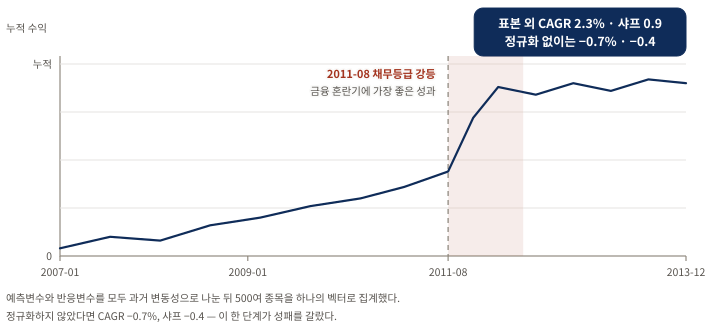
전체 기울기보다 어느 구간에서 성과가 몰렸는지 를 보는 그림이다. 이 전략은 2011년 8월 미국 재무부 채무등급 강등 직후의 금융 혼란기에 가장 좋은 성과를 냈다. 평균회귀 성격의 전략이 변동성이 치솟는 구간에서 잘 작동한 것으로 읽을 수 있으나, 한 번의 사건 구간에 성과가 몰렸다는 사실 자체는 표본 외 신뢰도를 낮추는 신호이기도 하다. 교재가 서술한 성과 집중 구간과 보고된 지표를 담은 AIML Quant 모식도다.이 전략의 표본 외 CAGR 은 2.3퍼센트, 샤프 비율은 0.9 다. 혹시 변수를 정규화하지 않았다면 어땠을지 궁금하다면 CAGR 은 −0.7퍼센트, 샤프 비율은 −0.4 가 되었을 것이다. 정규화 한 단계가 성패를 갈랐다.
주식 선택에의 적용 — 예측력 있는 펀더멘털 요인 찾기
- 2장에서는 모든 요인이 유용하다고 전제하고 다중 회귀에 넣었지만, 여기서는 어떤 요인이 정말 중요한지를 단계적 회귀로 알아낸다.
- 규모 정규화의 복잡함을 피하려고 기업 규모와 무관한 27개 변수만 입력으로 골랐고, 그중 7개가 선택되었다.
- 표본 외 CAGR 4%·샤프 1.1 — 이 장에서 샤프가 1을 넘은 유일한 예이며, 여러 종목을 집계해 데이터를 크게 늘린 효과로 볼 수 있다.
이 장 내내 몇 가지 단순한 수익률 변수만 예측변수로 써 왔다. 그러나 금융에 대한 머신러닝의 더 흥미로운 응용은 예측력 있는 기본적 요인(fundamental factor) 을 발견하는 일일지 모른다. 2장에서 요인 모형을 다룰 때는 모든 요인이 유용하다고 전제하고 다중 회귀의 입력으로 넣었음을 떠올려 보자. 여기서는 어떤 요인이 정말 중요한지를 알아내기 위해 단계적 회귀를 시도할 수 있다.
앞 절의 기술적 변수와 마찬가지로 주당순이익처럼 분명히 정규화가 필요한 펀더멘털 변수가 있다. 다만 이번 정규화는 변동성이 아니라 총매출이나 시가총액을 기준으로 삼아야 서로 다른 종목의 데이터를 합칠 수 있다. 저자는 이 복잡함을 피하려고 기업 규모와 무관한 변수만 입력으로 골랐다. 이 펀더멘털 데이터는 Quandl.com 을 통해 제공되는 Sharadar 의 Core US Fundamentals 데이터베이스에서 얻었다.
| 변수명 | 설명 | 기간 |
|---|---|---|
CURRENTRATIO | 유동비율 | 분기별 |
DE | 부채자본비율 | 분기별 |
DILUTIONRATIO | 주식 희석 비율 | 분기별 |
PB | 주가순자산비율 | 분기별 |
TBVPS | 주당 유형자산 장부가치 | 분기별 |
ASSETTURNOVER | 자산회전율 | 최근 1년 |
EBITDAMARGIN | EBITDA 마진 | 최근 1년 |
EPSGROWTH1YR | 주당순이익 성장률 | 최근 1년 |
EQUITYAVG | 평균 자기자본 | 최근 1년 |
EVEBIT | EBIT 대비 기업가치 | 최근 1년 |
EVEBITDA | EBITDA 대비 기업가치 | 최근 1년 |
GROSSMARGIN | 매출총이익률 | 최근 1년 |
INTERESTBURDEN | 재무 레버리지 | 최근 1년 |
LEVERAGERATIO | 레버리지 비율 | 최근 1년 |
NCFOGROWTH1YR | 영업현금흐름 성장률 | 최근 1년 |
NETINCGROWTH1YR | 순이익 성장률 | 최근 1년 |
NETMARGIN | 이익률 | 최근 1년 |
PAYOUTRATIO | 배당성향 | 최근 1년 |
PE | 다모다란 방식 주가수익비율 | 최근 1년 |
PE1 | 주가수익비율 | 최근 1년 |
PS | 주가매출비율 | 최근 1년 |
PS1 | 다모다란 방식 주가매출비율 | 최근 1년 |
REVENUEGROWTH1YR | 매출 성장률 | 최근 1년 |
ROA | 총자산이익률 | 최근 1년 |
ROE | 자기자본이익률 | 최근 1년 |
ROS | 매출액이익률 | 최근 1년 |
TAXEFFICIENCY | 세금 효율성 | 최근 1년 |
이 입력 변수들을 앞 절과 같은 방식으로 집계하고 단계적 회귀 절에서 쓴 함수를 그대로 써서, 알고리즘은 다음 분기 — 더 정확히는 63거래일 — 의 수익률에 대한 유의한 예측변수로 다음 일곱 개를 골랐다. 이 선택은 2007년 1월 3일부터 2013년 12월 31일까지의 데이터에 기반한다(주석 12, 전체 코드 stepwiseLR_SPX.m).
| 변수명 | 기간 |
|---|---|
CURRENTRATIO | 분기별 |
TBVPS | 분기별 |
EBITDAMARGIN | 최근 1년 |
GROSSMARGIN | 최근 1년 |
NCFOGROWTH1YR | 최근 1년 |
PS | 최근 1년 |
ROA | 최근 1년 |
T × S 예측변수 행렬 X 의 대부분 행은 값이 NaN 이다. 대부분의 종목이 대부분의 날짜에는 이 펀더멘털 요인을 결정할 분기 실적 발표를 하지 않기 때문이다. 그런데 fitlm 이나 Statistics Toolbox 의 다른 함수들처럼 stepwiselm 도 예측변수 행렬에서 NaN 이 든 행을 자동으로 무시해 주는 반가운 특징이 있다.
예측을 거래 전략으로 — 63일 보유
이 예측을 거래 전략으로 바꾸려면 예측 수익률이 양수일 때마다 매수해 63일 보유하고 음수일 때는 반대로 하면 된다.
원본 대응 · 교재 MATLAB — 겹치는 보유 구간을 63으로 나눈다
이는 63일 연속으로 매일 자본 한 단위씩 매수하게 될 수도 있음을 뜻한다. 그래서 63배로 레버리지되지 않은 일별 수익률을 구하려면 이 모든 자본 단위에서 발생한 총 손익을 63 으로 나눠야 한다.
longs = backshift(1, retPred1>0); % 1일 뒤
shorts = backshift(1, retPred1<0);
longs(1, :) = false;
shorts(1, :) = false;
positions = zeros(size(retPred1));
for h = 0:holdingDays-1
long_lag = backshift(h, longs);
long_lag(isnan(long_lag)) = false;
long_lag = logical(long_lag);
short_lag = backshift(h, shorts);
short_lag(isnan(short_lag)) = false;
short_lag = logical(short_lag);
positions(long_lag) = positions(long_lag)+1;
positions(short_lag) = positions(short_lag)-1;
end
dailyRet = smartsum(backshift(1, positions).*ret1(testset, :), 2)./ ...
smartsum(abs(backshift(1, positions)), 2);Python · 여기에는 없다, 그리고 그 이유가 중요하다
앞의 모든 절과 달리 이 횡단면 주식 선택 예제에는 대응하는 Python 코드가 없다. 우리가 게을러서가 아니라 돌릴 입력이 없기 때문 이다. rTree_SPX.m 과 stepwiseLR_SPX.m 은 저자의 로컬 fundamentalData 파일을 읽는데, 이 파일은 저자가 공개한 공식 ZIP 에 들어 있지 않다.
null 로 남겼다(표 13 셋째 행). 책에 인쇄된 수치는 보존했지만 우리가 검증한 값이 아니다. 발표에서 이 절의 성과를 인용한다면 "저자 보고값이며 재현되지 않았다"를 함께 말하는 편이 정확하다.
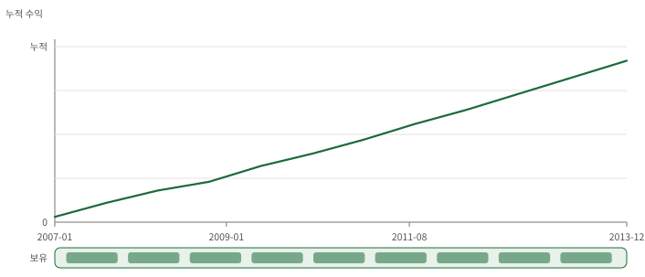
곡선의 기울기가 얼마나 고른가 를 앞선 SPY 그림들과 대조해 읽는다. 아래 띠는 63거래일 보유 구간이 겹쳐 쌓이는 모습이며, 그래서 총 손익을 63 으로 나눠야 레버리지되지 않은 일별 수익이 된다. 앞선 SPY 기반 실험들과 달리 샤프 비율이 1 을 넘어 통계적으로 유의한데, 저자는 이를 여러 종목을 집계해 데이터를 크게 늘린 효과로 본다. 교재가 서술한 지속적 상승과 보고된 지표를 담은 AIML Quant 모식도다.요약 — 약한 학습기를 다듬는 법이 곧 실력이다
- 어떤 약한 학습기로 시작하느냐 못지않게, 그 학습기를 개선하고 과적합을 줄이는 방법이 중요하다.
- 더 많은 학습 데이터(행)와 더 많은 예측변수(열)는 언제나 이롭다 — 행 약 1,000개, 열 4개짜리 SPY 학습셋에서 평범한 성적이 나온 것은 놀랍지 않다.
- 새 문제에서는 가장 단순한 기법에서 시작해 점점 복잡한 기법으로 나아간다. 트레이딩에서는 복잡함이 보상받지 못한다.
이토록 많은 AI 기법에서 두드러지는 한 가지 교훈은, 어떤 약한 학습기로 시작하느냐 못지않게 그 약한 학습기를 개선하고 과적합을 줄이는 방법이 중요하다는 것이다. 그 방법에는 교차 검증, 배깅, 무작위 부분공간, 랜덤 포레스트, 그리고 재학습과 평균화가 있다. 이들은 모두 데이터나 예측변수 선택에 인위적인 무작위성을 심고, 그 무작위성을 바탕으로 되도록 많은 학습기를 길러 낸다. 그 많은 약한 학습기를 평균하거나 그중 최선을 고르면 표본 외 데이터에 더 잘 일반화되는 모델을 얻으리라는 기대에서이며, 실제로 종종 그렇게 성공한다.
| 절 | 기법 | 표본 내 CAGR · 샤프 | 표본 외 CAGR · 샤프 |
|---|---|---|---|
| §4.1 | 다중 회귀 · 예측변수 4개 | 34.3% · 1.4 | 0.4% · 0.1 |
| §4.1 | 단계적 회귀 · ret2 하나 | 43.5% · 1.6 | 10.6% · 0.7 |
| §4.2 | 회귀 트리 · 극단 잎 2개 | 28.8% · 1.5 | 3.9% · 0.5 |
| §4.2 | 회귀 트리 · 모든 잎 | 73% · — | −7.2% · — |
| §4.3 | 교차 검증 회귀 트리 (K = 5) | — | 0.6% · 0.11 |
| §4.4 | 배깅 · 랜덤 포레스트 (K = 5) | — | 7.2% · 0.5 |
| §4.5 | 배깅 · 변수 전체 사용 | — | 1.5% · 0.2 |
| §4.6 | 부스팅 LSBoost | 반복에 따라 빠르게 상승 | 유의하지 않은 채로 남는다 |
| §4.7 | 분류 트리 · 5겹 교차 검증 | — | 4.8% · 0.4 |
| §4.8 | 서포트 벡터 머신 · 5겹 교차 검증 | 학습셋에서는 오히려 나쁘다 | 13.3% · 0.8 |
| §4.9 | 은닉 마르코프 모델 | 8.7% · — | 1% · — (본문 기준) |
| §4.10 | 신경망 · 은닉층 1개, 뉴런 1개 | 19% · — | −4% · — |
| §4.10 | 신경망 · 재학습 100회 최선 선택 | 29% · — | 3.2% · — |
| §4.10 | 신경망 · 100개 평균 | 26% · — | 1.9% · — |
| §4.11 | SPX 집계 · 정규화 회귀 트리 | — | 2.3% · 0.9 |
| §4.11 | SPX 집계 · 정규화 없음 | — | −0.7% · −0.4 |
| §4.12 | SPX 펀더멘털 단계적 회귀 · 63일 보유 | — | 4% · 1.1 |
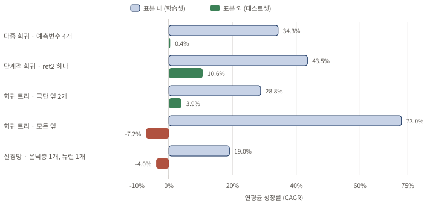
막대의 길이가 아니라 같은 쌍 안의 두 막대 간격 을 본다. 표본 내가 가장 긴 모든 잎 회귀 트리가 표본 외에서는 유일하게 큰 음수로 내려가고, 표본 외가 가장 긴 단계적 회귀는 표본 내에서도 가장 길다. 표본 내 성적만으로는 순위를 매길 수 없다는 것이 이 장의 반복되는 관찰이다. 교재 §4.1·§4.2·§4.10 이 보고한 수치만 사용한 AIML Quant 재구성이며, 표본 내 수치가 인쇄되지 않은 실험은 제외했다.더 많은 학습 데이터(입력 배열의 행 수)와 더 많은 예측변수(열 수)는 머신러닝 알고리즘에 언제나 이롭다. 그러니 행이 약 1,000개, 열이 고작 4개뿐인 SPY 학습셋에서 이 기법들 상당수가 평범한 성적을 낸 것은 조금도 놀랍지 않다. SPX 구성 종목 학습셋도 크게 낫지 않아 행이 약 10,000개, 열이 27개에 불과하다(주석 13 — 모든 종목을 집계하면 약 654,583개의 행이 되지만 펀더멘털 요인은 분기별로만 갱신되므로 실제로 NaN 이 아닌 행은 약 10,000개다). 전형적인 머신러닝 문제는 흔히 수백만 개의 행과 수백 개의 예측변수를 가진다.
금융시장에서 이보다 몇 자릿수 더 많은 데이터를 어디서 찾을 수 있을까. 한 가지 유망한 방향은 고빈도 데이터(high-frequency data) 연구이며(Rechenthin, 2014), 특히 1밀리초 이상의 빈도로 표본추출한 레벨 2 호가다. 또 하나는 뉴스와 소셜 미디어 같은 비정형 데이터(unstructured data) 를 연구해(Kazemian, 2014) 그것이 시장 움직임을 예고하는지 살피는 것이다. Domingos(2012)의 말처럼 머신러닝 알고리즘의 효능은 입력 특성에 크게 의존한다.
보충 A. 공식 코드로 다시 돌려 본 결과
- 이 절은 교재의 서술이 아니라 AIML Quant 가 저자 공식 배포본으로 직접 재실행한 결과 다. 교재의 주장과 구분해 읽는다.
- 선형 회귀·단계적 회귀·극단 잎 규칙·HMM 의 인쇄된 수치는 소수점 여섯 자리까지 정확히 재현되었다.
- 다만 원본 분할에는 목표값이 경계를 넘는 1행 누수가 있고, HMM 표본 외 수치는 본문과 저자 코드 주석이 서로 어긋난다.
- Python 적응 실험에서는 난수 시드만 바꿔도 신경망의 표본 외 부호가 뒤집힌다 — 한 번 돌린 수치를 근거로 쓰면 안 되는 이유다.
이 장의 수치를 그대로 인용하기 전에, 저자가 공개한 코드와 데이터로 같은 계산을 다시 돌려 보았다. 재현에 쓴 입력은 저자 페이지(epchan.com/book3)에서 내려받은 공식 ZIP 이며, 그 SHA-256 은 a556978e…0358, 입력 MAT 파일의 SHA-256 은 b94aa1b8…7fc4 다. MATLAB 스크립트 22개와 데이터 2개의 개별 체크섬을 SOURCE_MANIFEST.json 에 고정해 두었으므로 네트워크 없이도 전 구성원을 재검증할 수 있다. 자동 검증 23개가 모두 통과했다.
Python · 이 감사를 그대로 다시 돌리는 방법
아래 명령이 이 절의 모든 수치와 그림을 처음부터 다시 만든다. 앞 명령은 저자 공식 ZIP 을 내려받아 검증하고, --offline 을 붙인 뒤 명령은 네트워크 없이 고정된 SHA-256 을 재검증한 뒤 지표·차트 다섯 장·한국어 리포트·실행 노트북을 다시 생성한다.
# Machine Trading 프로젝트 디렉터리에서 실행한다
CH4=chapter_4_artificial_intelligence_techniques/src
# 저자 공식 ZIP 을 내려받아 검증한 뒤 전체 분석을 실행한다
uv run python $CH4/run_chapter4_analysis.py
# 네트워크 없이 고정된 SHA-256 만 재검증하고 산출물을 다시 만든다
uv run python $CH4/run_chapter4_analysis.py --offlinechapter4_full_report.ipynb 를 연다. 18개 절이 이 리포트의 논의 순서와 짝을 이루고, 출력에 23개의 결과 표와 다섯 장의 차트가 이미 담겨 있어 다시 실행하지 않아도 결과를 확인할 수 있다. 계산 본체는 run_chapter4_analysis.py 이며, 아래 각 절에 실은 Python 코드는 모두 이 파일에서 가져왔다. 다만 인쇄 지면 폭에 맞추려고 줄바꿈 위치만 다시 잡았고, 절마다 주변 코드 일부를 생략했다. 실행되는 정본은 언제나 이 파일이다. 두 파일 모두 스터디 참가자에게 공개된다.
재현 결과를 한 덩어리로 묶어 "재현했다"고 말하면 오해를 부른다. 세 가지 성격이 서로 다르기 때문에 분리해 기록한다.
| 등급 | 뜻 | 해당 주제 | 주의 |
|---|---|---|---|
| 원본 충실 재현 | 같은 공식 입력·같은 식·같은 분할로 수치를 다시 계산했다 | 선형 회귀, 단계적 회귀, 극단 잎 트리 규칙, HMM(공개 매개변수 replay) | 원본의 경계 누수까지 보존했다는 뜻이지, 그 설계를 승인한다는 뜻이 아니다 |
| Python 적응 | 라이브러리와 검증 설계를 현대화한 별도 실험 | 배깅·랜덤 포레스트, 부스팅, 분류 트리, SVM, 신경망 앙상블, 시간순 교차 검증 | MATLAB 숫자와 직접 일치한다고 주장하지 않는다 |
| 출력 전용 참조 | 책이나 소스 주석의 값만 보존하고 전략 지표는 null 로 둔다 | SPX 기술적·펀더멘털 주식 선택 예제 | 저자의 비공개 fundamentalData 가 공식 ZIP 에 없다 |
정확 재현으로 분류한 네 실험은 인쇄된 값과 소수점 여섯 자리까지 일치했다. 허용 오차 $5 \times 10^{-7}$ 안에서 16개 지표가 모두 통과했다.
| 실험 | 구간 | 재계산 CAGR | 원본 CAGR | 재계산 샤프 | 원본 샤프 |
|---|---|---|---|---|---|
| 다중 회귀 | 학습 | 0.343339 | 0.343339 | 1.365304 | 1.365304 |
| 다중 회귀 | 테스트 | 0.003582 | 0.003582 | 0.103952 | 0.103952 |
| 단계적 회귀 | 학습 | 0.436383 | 0.436383 | 1.649068 | 1.649068 |
| 단계적 회귀 | 테스트 | 0.105685 | 0.105685 | 0.695228 | 0.695228 |
| 극단 잎 규칙 | 학습 | 0.287519 | 0.287519 | 1.529458 | 1.529458 |
| 극단 잎 규칙 | 테스트 | 0.038665 | 0.038665 | 0.505706 | 0.505706 |
| HMM | 학습 | 0.086644 | 0.086644 | 0.467205 | 0.467205 |
| HMM | 테스트 | −0.010173 | −0.010173 | 0.019724 | 0.019724 |
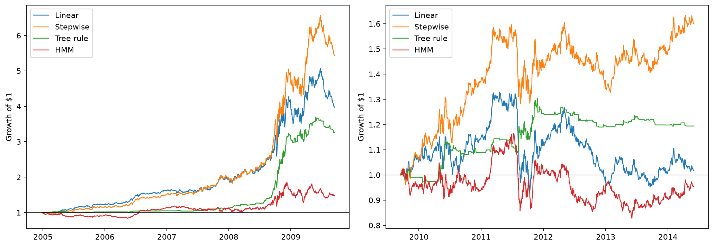
같은 네 색을 왼쪽에서 오른쪽으로 따라가며 순위가 어떻게 바뀌는지 보는 그림이다. 학습 구간에서는 네 곡선이 모두 크게 벌어지지만, 세로축 눈금이 6.5배에서 1.6배로 바뀐 오른쪽에서는 Stepwise 를 뺀 나머지가 사실상 제자리다. HMM 곡선이 1.0 아래에서 끝나는 것이 표 14 마지막 행의 음수 CAGR 이며, 바로 아래에서 다루는 본문·코드 불일치의 시각적 근거다. AIML Quant 가run_chapter4_analysis.py 로 재현한 결과이며 교재에 실린 그림이 아니다.
마지막 행을 눈여겨볼 필요가 있다. 교재 본문은 HMM 의 테스트셋 성과를 "CAGR 이 1퍼센트에 그쳤다"고 서술하지만, 저자가 배포한 hmm_test.m 102번째 줄의 출력 주석은 Out-of-sample: CAGR=-0.010173, 즉 음의 1.0퍼센트 를 기록하고 있다. 재현 결과도 이 코드 주석과 일치한다. 부호가 다르므로 "표본 외에서 소폭 플러스"와 "표본 외에서 소폭 마이너스"라는 서로 다른 결론이 되며, HMM 이 이 장에서 가장 약한 결과 중 하나라는 점은 어느 쪽으로 읽어도 달라지지 않는다. 발표에서 이 수치를 인용할 때는 어느 출처의 값인지 밝히기를 권한다.
두 번째로 확인한 것은 학습·테스트 경계다. retFut1 = fwdshift(1, ret1) 로 목표를 만든 뒤 trainset = 1:floor(N/2) 를 그대로 쓰면, 마지막 학습 예측변수 행(2009-09-15)의 목표값이 첫 테스트일(2009-09-16)의 수익이 된다. 따라서 표 14 의 테스트 수치는 엄밀한 완전 격리 표본 외가 아니라 원본이 정의한 테스트 구간의 재현 이다.
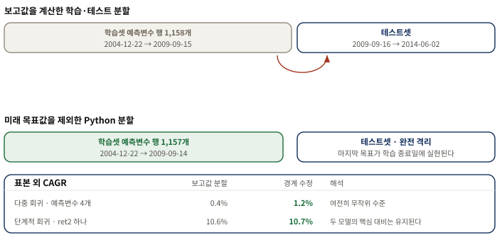
위아래 두 분할에서 학습 종료일이 하루 다르다 는 점만 보면 된다. 아래 표가 보여 주듯 이 누수를 제거해도 두 모델의 대비 — 전체 회귀는 무작위 수준, 단계적 회귀는 두 자릿수 — 는 그대로 유지된다. 즉 교재의 핵심 논지는 이 결함에 의존하지 않는다. 다만 이 리포트의 모든 Python 적응 실험은 수정된 1,157행만 사용한다. AIML Quant 재현 감사 결과이며 교재의 서술이 아니다.셋째로, 저자 공식 배포본 자체에 미완성 표식이 남아 있다. hmm.m 과 nn_retrain.m 에는 INCOMPLETE!, hmm_train2.m 에는 작동하지 않는다는 assert, stepwiseLR_SPX_fillFwd.m 에는 TODO 가 있다. 또 분류 트리 결과로 인용되는 출력 주석 0.047740 / 0.366381 은 rTree.m, cTree.m, hmm.m, hmm_VXX.m, hmm2.m 다섯 파일에 똑같이 복제되어 있어 어느 스크립트의 출력인지 확정할 수 없다. 이런 값들은 정확성 판정에 쓰지 않고 출력 전용 참조로만 남겼다.
마지막으로 거래비용을 붙였을 때의 감도를 기록해 둔다. 아래는 현대적 라이브러리로 다시 구현한 Python 적응 실험이며 MATLAB 수치와 직접 비교하지 않는다. 모든 전략은 신호를 하루 뒤 포지션에 적용하고, 편도 2bps × 포지션 변화량을 차감한 값을 함께 저장했다. 이는 스프레드·슬리피지·대차 수수료·시장 충격을 모두 포함한 실거래 견적이 아니라 일봉 회전율의 최소 마찰 진단이다.
- 랜덤 포레스트 — 총 8.70% → 비용 후 4.78% (최대 낙폭 −25.6%)
- 서포트 벡터 머신 — 총 11.20% → 비용 후 11.16% (회전율이 낮아 비용에 거의 무감하다)
- 분류 트리 — 총 3.97% → 비용 후 0.05%
- 부스팅 — 총 −2.20% → 비용 후 −6.12%
- 신경망 앙상블 — 총 −3.04% → 비용 후 −5.97%
![두 개의 패널이다. 왼쪽 막대그래프 제목은 Python adaptations: OOS CAGR 이고 여섯 모델 tree, classification_tree, random_forest, boosting, svm, mlp_ensemble 마다 gross 와 net at 2 bps 두 막대를 나란히 그린다. tree 는 마이너스 0.108에서 마이너스 0.145로 가장 낮고, classification_tree 는 0.040에서 거의 0으로 줄며, random_forest 는 0.087에서 0.048로 절반 가까이 깎이고, boosting 은 마이너스 0.021에서 마이너스 0.061로 내려가며, svm 은 0.112에서 0.112로 두 막대의 높이가 거의 같고, mlp_ensemble 은 마이너스 0.030에서 마이너스 0.059로 내려간다. 오른쪽 선그래프 제목은 Python adaptations: OOS gross wealth 이고 가로축은 0에서 1200까지의 거래일, 세로축은 1달러의 성장이다. random_forest 가 중반에 1.75까지 올랐다가 1.5 부근에서 끝나고 svm 이 꾸준히 올라 1.65 부근에서 끝나며, classification_tree 는 1.2 부근, boosting 과 mlp_ensemble 은 0.9 아래, tree 는 0.6 부근까지 내려간다.](assets/figs/fig-python-models.png) 왼쪽에서 두 막대의 높이 차이 가 곧 회전율 비용이다. svm 은 두 막대가 붙어 있어 비용에 거의 무감하고, random_forest 는 8.7%에서 4.8%로 절반 가까이 깎이며, classification_tree 는 4.0%에서 0에 붙어 사실상 전부를 비용으로 낸다. 위 목록에 없는
왼쪽에서 두 막대의 높이 차이 가 곧 회전율 비용이다. svm 은 두 막대가 붙어 있어 비용에 거의 무감하고, random_forest 는 8.7%에서 4.8%로 절반 가까이 깎이며, classification_tree 는 4.0%에서 0에 붙어 사실상 전부를 비용으로 낸다. 위 목록에 없는 tree 막대는 잎 크기 하한만 둔 단일 회귀 트리로, 앙상블을 씌우기 전의 출발점이 얼마나 나쁜지를 보여 준다. 오른쪽 곡선의 가로축은 날짜가 아니라 표본 외 거래일 번호다. AIML Quant 가 현대적 라이브러리로 다시 구현한 별도 실험이며, 표 14 의 MATLAB 수치와 직접 비교하지 않는다.
이 여섯 숫자를 그대로 믿기 전에 마지막으로 확인한 것이 있다. 위 신경망 값은 시드 하나의 결과가 아니라 열 개를 평균한 것인데, 그 열 개가 서로 얼마나 다른지를 따로 그려 보았다.
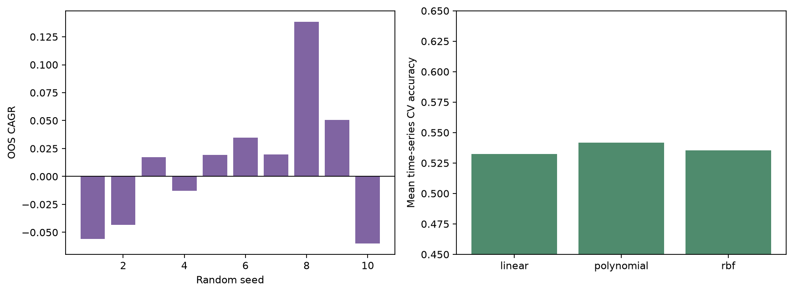
왼쪽에서 볼 것은 개별 막대의 높이가 아니라 0선을 넘나든다는 사실 이다. 같은 데이터·같은 구조·같은 하이퍼파라미터인데 난수 시드만 바꾸면 표본 외 CAGR 이 −6.0%에서 +13.8%까지 움직이고 부호까지 바뀐다. 신경망을 한 번 돌려 얻은 수치는 그 자체로는 근거가 되지 못하며, 위 목록의 −3.04%도 이 열 개를 평균해 얻은 값이라는 뜻이다. 오른쪽은 세 커널의 교차검증 정확도가 모두 0.53 부근에 몰려 있음을 보여 준다 — 커널을 고르는 일이 이 문제에서는 성과를 가르지 않는다. 정확도 기준선이 0.5라는 점도 함께 읽어야 한다. AIML Quant 재현 감사 결과이며 교재의 서술이 아니다.보충 B. 우리 문제에 옮길 때의 판단 기준
- 이 절의 기준은 교재의 주장이 아니라 이 리포트가 제안하는 운영 관점의 확장 이다.
- 기법을 고르기 전에 데이터의 행과 열, 검증 설계, 비용 감도를 먼저 확인한다.
- 표본 외 성적 하나로 채택을 결정하지 않는다 — 그 표본 외를 몇 번 들여다봤는지가 더 중요하다.
이 장의 실험들은 모두 SPY 한 종목, 한 번의 고정 분할에 대한 백테스트다. 모델 우열의 보편적 증거나 현재 시장에 대한 추천이 아니다. 특히 테스트 결과를 보고 시드·잎 크기·커널·비용을 다시 고르면 그 테스트도 학습자료가 되므로 새 표본 외 기간이 필요해진다.
| 질문 | 적합 신호 | 비적합 신호 | 확인 방법 |
|---|---|---|---|
| 데이터의 행과 열이 충분한가? | 수만 행 이상, 예측변수 수십 개 이상 | 이 장의 SPY 처럼 약 1,000행 × 4열 | NaN 을 제외한 실효 행 수를 센다 |
| 검증 설계가 시간을 존중하는가? | 과거 → 미래 순서를 지키는 분할 | 무작위 K겹으로 미래 행이 과거 모델 선택에 섞임 | 모든 학습 구간의 마지막 날짜가 검증 첫 날짜보다 앞서는지 자동 검사 |
| 비용을 견디는가? | 회전율이 낮아 비용 전후 차이가 작다 | 비용 후 성과가 0 근처로 소멸한다 | 편도 비용을 넣은 값과 넣지 않은 값을 함께 기록한다 |
| 표본 외를 몇 번 봤는가? | 모델 선택이 모두 학습 구간 안에서 끝났다 | 테스트 성적을 보고 설정을 되돌아가 바꿨다 | 선택 이력을 남기고, 되돌아갔다면 새 기간을 확보한다 |
| 단순한 대안을 이겼는가? | 단계적 회귀 같은 기준선보다 명확히 낫다 | 복잡한 모델이 기준선과 비슷하거나 못하다 | 가장 단순한 기법을 항상 함께 돌려 비교한다 |
이 장의 결과를 한 문장으로 옮기면 이렇다. 표본 외 성적을 가장 크게 움직인 것은 알고리즘의 정교함이 아니라 두 가지였다 — 변수를 줄인 것(단계적 회귀), 그리고 데이터를 늘린 것(SPX 집계와 정규화). 신경망까지 올라갔다가 다시 뉴런 하나로 내려온 §4.10 의 여정이 그 점을 가장 선명하게 보여 준다.
① 우리 업무에서 예측변수의 열을 늘릴 수 있는 가장 값싼 방법은 무엇인가? ② 무작위 K겹 교차 검증을 시간순 분할로 바꾸면 우리 기존 백테스트 결과 중 어떤 것이 달라질까? ③ 표본 외 구간을 몇 번 들여다봤는지 우리는 실제로 기록하고 있는가?
연습문제 10개 — 재학습·임계값·앙상블·온라인 디코딩
원문의 문항을 짧은 실행 과제로 재구성했다. 세부 데이터 경로와 원문 표현은 참가자용 교재를 함께 본다.
단계적 회귀로 SPY 익일 수익률을 예측할 때 매일 최신 데이터를 학습셋에 더해 재학습한다. 2009-09-16~2014-06-02 구간에서 CAGR 10.6% 와 샤프 0.7 을 넘기는가?
예측 수익률의 크기가 임계값을 넘을 때만 신호를 내도록 바꾼다. 표본 내 최적 임계값이 표본 외에서도 더 나은 성적을 내는가?
매매 금액을 예측 수익률 크기에 비례시킨다. 학습셋 평균 절대 시장가치가 1달러가 되도록 비례상수를 맞추고 레버리지 수익률로 CAGR 을 계산한다.
펀더멘털 데이터셋의 반응을 상승·하락 분기로 이산화하고 무작위 부분공간과 분류 트리 랜덤 포레스트를 적용한다. 이산 반응에서 "예측 반응의 평균"은 무엇을 뜻하는가?
여러 커널 함수와 커널 스케일을 시도해 기본 SVM 을 개선한다. 어떤 설정이 가장 좋은가?
HMM 온라인 디코딩을 구현한 소프트웨어를 찾아 for 루프 없이 SPY 모델의 은닉 상태를 디코딩한다.
예측에 앞서 매 시점마다 SPY 의 HMM 매개변수를 다시 추정한다. 표본 외 CAGR 이 개선되는가?
SPY 의 HMM 모델로 오늘이 강세장인지 약세장인지 판단한다.
이 장에서 가장 마음에 드는 기법을 고르고, SPY 와 SPX 구성 종목 문제의 예측변수로 쓸 기술적 지표 데이터를 찾을 수 있는 한 많이 모은다.
SPY 분류 트리 모델에 랜덤 포레스트를 적용해 회귀 트리 모델의 해당 결과보다 나아지는지 확인한다.
핵심 용어
| 용어 | 이 장에서의 의미 |
|---|---|
| 과적합 (overfitting) | 과거 데이터에만 잘 맞고 표본 외에서는 어긋나는 현상. 이 장 전체의 적이다. |
| 특성 선택 (feature selection) | 많은 후보 변수 중 예측에 정말 중요한 변수만 골라내는 일. |
| 단계적 회귀 (stepwise regression) | 변수를 하나씩 넣었다 뺐다 하며 최적 조합을 찾는 선형 회귀. 기준은 제곱오차합·AIC·BIC. |
| 회귀 트리 (regression tree) | 부등식으로 데이터를 계층적으로 쪼개 연속 반응을 예측하는 모델. 분할 기준은 자식 노드 분산. |
| 분류 트리 (classification tree) | 상승·하락 같은 이산 클래스를 예측하는 트리. 분할 기준은 GDI. |
| 지니 다양성 지수 (GDI) | 한 노드의 불순도. 한 클래스만 있으면 0, 반반이면 최대 0.5. |
| 교차 검증 (cross validation) | 학습셋을 K조각으로 나눠 한 조각씩 빼고 검증해 최선 모델을 고르는 방법. |
| 배깅 (bagging) | 복원추출로 데이터를 복제해 여러 모델을 학습시키고 예측을 평균한다. 편향은 두고 분산을 낮춘다. |
| 배깅 외 관측치 (out-of-bag) | 어떤 백에 뽑히지 않은 관측치. 그 백의 표본 외 검사 자료가 된다. |
| 무작위 부분공간 (random subspace) | 데이터가 아니라 예측변수를 무작위로 뽑아 여러 모델을 만드는 방법. 분류 문제에서만 동작한다. |
| 랜덤 포레스트 (random forest) | 배깅과 무작위 부분공간을 결합한 트리 앙상블. MATLAB 기본 표본 비율은 예측변수의 1/3. |
| 부스팅 (boosting) | 앞 모델의 잔차에 다음 모델을 집중시켜 순차적으로 개선한다. 과적합을 완화하지는 않는다. |
| 앙상블 · 약한 학습기 | 홀로 약한 학습기를 많이 모아 하나의 강한 학습기를 만드는 방법과 그 구성원. |
| 서포트 벡터 머신 (SVM) | 두 무리를 가장 넓은 마진의 초평면으로 갈라 분류하는 기법. 마진이 표본 외 안전 여유다. |
| 커널 함수 (Kernel function) | 예측변수를 비선형 변환해 곡면으로 데이터를 가르게 하는 함수. 유연성과 과적합 여지를 함께 늘린다. |
| 은닉 마르코프 모델 (HMM) | 관측되지 않는 상태로 관측값을 설명하는 모델. 이 장에서는 강세·약세 두 상태와 상승·하락 두 방출. |
| 전이 · 방출 행렬 | 상태 간 이동 확률과 각 상태가 관측값을 낼 확률을 담은 두 표. 각 행의 합은 1이다. |
| EM 알고리즘 | 은닉 상태 모델의 매개변수를 가능도 최대화로 추정하는 비지도 학습법. |
| 신경망 · 시그모이드 | S자 곡선 $S(x)=1/(1+e^{-x})$ 을 겹쳐 임의의 비선형 함수를 근사하는 모델과 그 핵심 함수. |
| 조기 종료 (early stopping) | 검증셋 오차가 늘기 시작하면 학습을 즉시 멈추는 과적합 억제 장치. |
| 딥러닝 (deep learning) | 층은 많고 층당 노드는 적은 신경망. 특징이 풍부한 데이터셋에서 강점을 보인다. |
| 데이터 정규화 (normalization) | 종목마다 다른 변동성을 맞춰 여러 종목 데이터를 하나로 합칠 수 있게 하는 처리. |
| 생존편향 (survivorship bias) | 현재 살아남은 종목만으로 과거를 평가할 때 생기는 낙관 편향. 이 장의 CRSP 데이터에는 없다. |
| 데이터 스누핑 편향 (data snooping bias) | 같은 데이터를 반복해 들여다보며 설정을 고르는 과정에서 성적이 부풀려지는 현상. |
참고 자료와 도형 출처
- [1]Ernest P. Chan, Machine Trading (Wiley, 2017), Chapter 4 “Artificial Intelligence Techniques”. 본문의 절·그림·표·연습문제 번호와 인용 수치의 출처. 참가자용 한국어 해설판.
- [2]Breiman, Friedman, Olshen, Stone (1984). 회귀·분류 트리의 분산 최소화 분할 기준의 출처.
- [3]Friedman (1999).
LSBoost가 사용하는 경사 하강 부스팅의 출처. - [4]Murphy (2012). EM 알고리즘 논의의 출처. Bayes Net Toolbox for MATLAB 도 같은 저자의 도구다.
- [5]Dueker (2006) — 연속 방출 HMM. Kun (2015) — 부스팅이 과적합되지 않는다는 이론적 논거. Anonymous (2015) — SVM 벌점 항의 수학적 세부. Allen (2015) — 2006년 신경망 돌파구. Hothorn (2014) — R 패키지 대응.
- [6]Domingos (2012) — 입력 특성 의존성. Rechenthin (2014) — 고빈도 데이터. Kazemian (2014) — 비정형 데이터.
- [7]저자 배포 자료
epchan.com/book3의 Chapter 4 ZIP (SHA-256a556978e…0358). 보충 A 의 재현 감사에 사용한 MATLAB 스크립트 22개와 데이터 2개의 원본. - [8]AIML Quant 재현 산출물 — 참가자용 교재 저장소의 Chapter 4 재현 보고서 와 실행 스크립트. 보충 A 의 모든 수치와 분류의 출처.
- [9]도형 출처 — 이 리포트의 도형은 두 종류다. 발표자가 이 장의 논리를 새로 배치해 만든 도해와, 교재의 같은 번호 그림이 전달하는 관계·축·상태 변화를 보존해 다시 작도한 재구성이다. 후자 가운데 자산 곡선류는 교재의 서술과 인쇄된 지표를 담은 모식도이지 원자료의 재플롯이 아니다. 어느 쪽인지와 재구성 범위는 각 도형의 캡션 아래 메모에 개별로 표시했다.